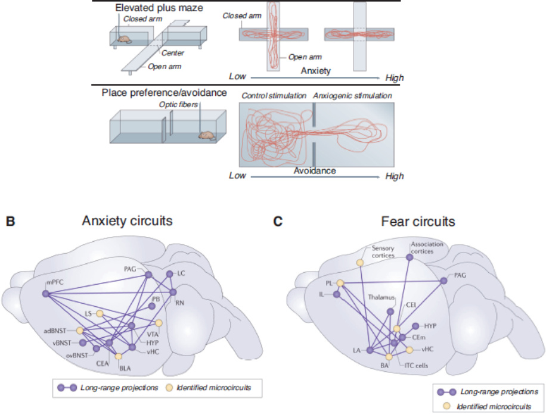

Chương 6 — Thần Kinh Học Cảm Xúc Ở Loài Gặm Nhấm
Nếu chúng ta muốn nghiên cứu sinh học thần kinh của các trạng thái cảm xúc ở động vật, chúng ta cần có một cách để gợi ra những trạng thái đó. Các cảm xúc, như nguồn gốc từ nghĩa của từ này ngụ ý, về bản chất là mang tính phản ứng; chúng liên quan đến các chuyển động (các hành vi) được kích hoạt bởi các kích thích trong thế giới bên ngoài cũng như bởi sự biểu hiện nội tại của các kích thích và hành vi. Như chúng ta đã lưu ý, những biểu hiện nội tại đó cũng có thể được tiếp cận thuần túy từ trí nhớ hay trong các giấc mơ, điều mà chúng ta con người thường xuyên trải nghiệm, nhưng về điều này người ta còn biết rất ít ở động vật. Hầu hết các nhà thần kinh học nghiên cứu cảm xúc ở động vật quan tâm đến việc hiểu cách một kích thích bên ngoài gợi ra một phản ứng cảm xúc, vì các kích thích bên ngoài cho phép kiểm soát thực nghiệm tốt hơn. Ngược lại, nhiều nghiên cứu ở người (xem chương 8) dựa vào các biểu hiện nội tại của các kích thích (chẳng hạn, yêu cầu người tham gia nhớ lại các sự kiện cảm xúc trong cuộc đời họ).
Trong khi các nghiên cứu về cảm xúc ở động vật thường dùng các kích thích có thể kiểm soát bằng thực nghiệm như những chất gây ra cảm xúc, một lựa chọn tiếp theo lại tùy thuộc vào việc người ta muốn gợi ra cảm xúc bằng một kích thích mà con vật thể hiện kiểu phản ứng bẩm sinh, dựa trên sự tiến hóa và di truyền của nó, hay bằng một kích thích mà con vật đã học cách phản ứng, chẳng hạn thông qua huấn luyện kéo dài (hộp 6.1). Mỗi cách tiếp cận đều có ưu điểm và nhược điểm riêng. Trong các phần sau, chúng ta sẽ mô tả những gì đã được học, và những gì vẫn còn chưa biết, về sinh học thần kinh của các phản ứng cảm xúc được học và các phản ứng cảm xúc bẩm sinh, bằng các ví dụ tương ứng là sợ hãi có điều kiện và sợ hãi không điều kiện, tập trung ở đây vào các nghiên cứu ở loài gặm nhấm rồi sau đó (chương 7) ở ruồi giấm Drosophila. (Một lần nữa, chúng ta dùng thuật ngữ sợ hãi để chỉ một trạng thái cảm xúc nội tại với tư cách ví dụ minh họa, mà không nhất thiết gán cho con vật bất kỳ ý thức hay cảm giác chủ quan nào.) Chúng ta cũng thảo luận các hành vi cảm xúc liên quan, bao gồm cả sự hung hăng, mà ở người sẽ đi kèm với các cảm giác chủ quan như "giận dữ" hay "cuồng nộ." Đây là những ví dụ mẫu có giá trị trong các nghiên cứu cảm xúc trên động vật, nhưng chúng mới chỉ chạm đến bề mặt. Chúng cũng đặt ra những câu hỏi mở quan trọng: những chủ đề rút ra từ các ví dụ này có áp dụng cho cả các cảm xúc xã hội không? Và cho cả các cảm xúc có tính tích cực không? Chúng ta không cung cấp điều gì gần với một cuộc khảo sát toàn diện về tất cả các hệ cảm xúc khác nhau đã được nghiên cứu ở động vật, mà thay vào đó chọn cho người đọc một cái nhìn thoáng qua về các hệ mô hình mà các chi tiết đã được làm rõ nhất cho đến nay bằng các phương pháp hiện đại.
Hộp 6.1. Hành Vi Đứng Hình Bẩm Sinh So Với Hành Vi Đứng Hình Được Học.
Một nguồn nhầm lẫn thường gặp, phát sinh trong cuộc thảo luận về các phản ứng cảm xúc bẩm sinh (hay "bản năng") so với các phản ứng cảm xúc được học, là câu hỏi liệu chính phản ứng đó có được học, hay liệu đó là các liên kết với các kích thích mới là thứ được học. Đứng hình và bỏ chạy thường được xem là các hành vi phòng vệ bản năng; động vật không phải học cách thực hiện chúng. Tuy nhiên, các kích thích gợi ra những hành vi này có thể làm điều đó theo cách "bẩm sinh," nghĩa là không cần huấn luyện, hay theo cách "có điều kiện," nghĩa là chỉ sau khi huấn luyện. Chẳng hạn, chuột nhắt không đứng hình khi tiếp xúc với một âm 2 kHz, nhưng sẽ đứng hình nếu âm đó được ghép cặp lặp đi lặp lại với một cú sốc điện (hình 6.1). Ngược lại, đứng hình và bỏ chạy có thể được gợi ra bởi một số kích thích thị giác cụ thể (chẳng hạn, một đĩa nở dần trùm từ trên xuống, hình 2.5) ở chuột nhắt chưa qua huấn luyện, ngay lần tiếp xúc đầu tiên. Tuy nhiên, đã có người lập luận rằng mọi hành vi đứng hình quan sát được trong phòng thí nghiệm đều là có điều kiện. Theo quan điểm này, phản ứng không điều kiện (UR) đối với một cú sốc điện chân (kích thích không điều kiện [US]) là bùng nổ hoạt động; sự đứng hình thường theo sau bùng nổ đó sau khi cú sốc kết thúc là một phản ứng có điều kiện (hay "điều kiện") được gợi ra bởi bối cảnh mà việc huấn luyện diễn ra (Fanselow 1980). Bằng chứng được trích dẫn để ủng hộ quan điểm này là nếu cú sốc điện chân được đưa ngay sau khi con vật được đưa vào chuồng huấn luyện—trước khi nó có thời gian tìm tòi và tạo ra một biểu hiện nội tại về bối cảnh—thì không quan sát thấy sự đứng hình sau sốc. Tuy nhiên, một lần nữa, điều này không có nghĩa là con vật phải học cách đứng hình, mà nghĩa là sự đứng hình trong các điều kiện này được gợi ra như một hệ quả của một liên kết được học giữa bối cảnh (chuồng huấn luyện) và một sự kiện gây khó chịu (cú sốc điện chân).
Một sự khái quát hóa cực đoan của quan điểm này là không có thứ gì gọi là "đứng hình bẩm sinh"—rằng mọi trường hợp hành vi đứng hình đều phản ánh một liên kết được học với bối cảnh. Theo lý luận này, nếu một con vật được quan sát thấy đứng hình trong một bối cảnh nhất định, thì theo định nghĩa nó đã bị điều kiện hóa, và sẽ đứng hình bất cứ khi nào được tiếp xúc với bối cảnh đó. Nhưng dự đoán này mâu thuẫn với các thí nghiệm gần đây, trong đó sự đứng hình được gợi ra ở chuồng nhà của con vật bằng kích thích quang di truyền các nơ-ron Sf1+ ở phân vùng lưng-trong của vùng dưới đồi trung-thất (VMHdm; xem phần chính). Một khi kích thích quang di truyền kết thúc, không quan sát thấy sự đứng hình nào nữa trong chuồng nhà, ngụ ý rằng việc điều kiện hóa với bối cảnh đã không xảy ra (Kunwar et al. 2015). Các dữ liệu này cung cấp bằng chứng rằng việc kích hoạt nhân tạo một số vùng não nhất định có thể tạo ra sự đứng hình không điều kiện. Vì những vùng này thường được kích hoạt khi động vật tiếp xúc với một kẻ săn mồi và đứng hình, có vẻ hợp lý khi lập luận rằng não chứa các mạch thần kinh thực sự có thể trung gian sự đứng hình không điều kiện đáp ứng với kẻ săn mồi.
Cảm Xúc, Sợ Hãi Và Hạch Hạnh Nhân
Cấu trúc thần kinh được nghiên cứu mạnh mẽ nhất liên quan đến việc tạo ra các trạng thái giống sợ hãi là hạch hạnh nhân, một cấu trúc phức tạp chứa ít nhất mười hai phân vùng khác nhau (xem các hình 2.1, 6.2). Hơn nữa, nó hoạt động thông qua sự tương tác rất chặt chẽ với các cấu trúc não khác. Một trong số đó, nhân giường của bó tận cùng, tham gia cùng với các nhân của hạch hạnh nhân trong việc xử lý lo âu (xem dưới đây và hình 6.6B). Các nghiên cứu về hạch hạnh nhân đã nhận được quá nhiều sự chú ý, cả trên báo chí phổ thông lẫn khoa học, đến mức một số người đã đồng nhất sợ hãi với hạch hạnh nhân, hay thậm chí đồng nhất bản thân cảm xúc với hoạt động của hạch hạnh nhân. Tuy nhiên, như chúng ta đã lưu ý ở các chương trước, quan điểm này là đơn giản hóa quá mức và khái quát hóa quá mức; trong khi hạch hạnh nhân đóng một vai trò quan trọng không thể chối cãi trong sợ hãi được học, nó chưa xa là "ghế ngồi của cảm xúc" trong não. Trên thực tế, Joseph LeDoux, người đã thực hiện các công trình tiên phong về vai trò của hạch hạnh nhân trong sợ hãi có điều kiện (LeDoux 1996; 2000), hiện đã diễn giải lại hạch hạnh nhân như một cấu trúc kiểm soát các hành vi phòng vệ (chẳng hạn, đứng hình) chứ không phải các "cảm xúc" (như ông hiện đã định nghĩa lại [LeDoux 2012]): "các cảm giác sợ hãi hay lo âu không phải là sản phẩm của các mạch kiểm soát hành vi phòng vệ" (LeDoux và Pine 2016) (chữ nghiêng của chúng tôi).
Câu phát biểu này có nghĩa là hạch hạnh nhân không liên quan gì đến sợ hãi sao? Nói rộng hơn, nó có nghĩa là các mạch kiểm soát hành vi phòng vệ là cần thiết nhưng không đủ để tạo ra các cảm giác sợ hãi hay lo âu, hay thậm chí chúng không cần thiết để trải nghiệm những cảm giác đó? Chúng tôi sẽ đồng ý với ý trước nhưng phản đối mạnh ý sau; như chúng ta sẽ thấy ở chương 8, có những bệnh nhân thiếu hạch hạnh nhân không trải nghiệm sợ hãi. Vì lý do đó, chúng tôi cảm thấy công trình về hạch hạnh nhân rất liên quan đến câu hỏi các cảm xúc được tạo ra và được biểu diễn trong não thế nào. Trên thực tế, chúng tôi (giống những người khác, bao gồm cả Jaak Panksepp) lập luận rằng các cấu trúc dưới vỏ não kiểm soát hành vi phòng vệ (nghĩa là hạch hạnh nhân, vùng dưới đồi, và các cấu trúc liên quan) có khả năng là thiết yếu cho việc mã hóa các trạng thái cảm xúc trung ương tương ứng—bất kể con vật có hay không có các "cảm giác" chủ quan về những trạng thái đó.
"Điều Kiện Hóa Sợ Hãi" Là Gì?
Vì các công trình cũ hơn về chủ đề này đã được trình bày trong các bài tổng quan toàn diện (Davis 1992; LeDoux 2000) và các cuốn sách (LeDoux 1996), chúng ta sẽ nói ngắn gọn ở đây và giới thiệu độc giả quan tâm đến những nguồn trước đó để biết thêm thông tin. Nghịch lý thay, mô hình điều kiện hóa sợ hãi được phát triển không phải nhằm nghiên cứu bản thân cảm xúc nhiều như nhằm nghiên cứu học tập liên kết. Điều kiện hóa sợ hãi đại diện cho một hình thức điều kiện hóa kiểu Pavlov mà người ta có thể gọi là "học tập cảm xúc": khả năng của não học cách phản ứng với một kích thích trước đó trung tính bằng một phản ứng cảm xúc (Fanselow 1984). LeDoux không còn dùng thuật ngữ "điều kiện hóa sợ hãi" mà thay vào đó gọi nó là "điều kiện hóa phòng vệ" (LeDoux 2012) để nhấn mạnh rằng (theo quan điểm của ông) việc điều kiện hóa này không tạo ra một cảm xúc. Tuy nhiên, đây không phải là một thuật ngữ được chấp nhận rộng rãi; quả thật, tại thời điểm viết cuốn sách này, một tra cứu PubMed bằng "điều kiện hóa phòng vệ" trả về 69 kết quả, trong khi "điều kiện hóa sợ hãi" trả về 4.649 kết quả. Vì chúng ta sẽ lập luận, giống những người khác (Fanselow và Pennington 2018), rằng việc điều kiện hóa như vậy thực sự tạo ra một trạng thái cảm xúc nội tại, và vì sợ hãi là một cảm xúc, chúng ta sẽ tiếp tục dùng thuật ngữ phổ biến hơn "điều kiện hóa sợ hãi."
Trong hình thức học tập đơn giản này, một con vật được tiếp xúc với một "kích thích có điều kiện" (CS) trước đó trung tính, chẳng hạn một âm trung tính, kết thúc đồng thời với một "kích thích không điều kiện" (US) như một cú sốc điện chân (giao thức này được gọi là điều kiện hóa trì hoãn). Sau vài lần ghép cặp như vậy, CS gợi ra sự đứng hình, một phản ứng phòng vệ có điều kiện (CR; Fanselow 1980) (hình 6.1; xem thêm hộp 6.1). Đáng chú ý, các nghiên cứu gần đây đã cho thấy một con chuột cống chỉ được huấn luyện trong một ngày duy nhất có thể thể hiện phản ứng đứng hình ngay cả khi việc kiểm tra bị trì hoãn một năm, cho thấy sự bền bỉ đáng kinh ngạc và giá trị thích nghi của hình thức học tập này. Ở người, sự bền bỉ của các phản ứng sợ hãi được học có thể, trong một số hoàn cảnh nhất định, dẫn đến các rối loạn tâm thần, chẳng hạn rối loạn stress sau sang chấn.
Quan trọng là, phản ứng có điều kiện không chỉ đơn thuần gồm hành vi đứng hình. Thay vào đó, nó gồm cả một chùm các phản ứng sinh lý (tự chủ) và nội tiết (hormone) được phối hợp cũng như các phản ứng hành vi (hình 2.1). Những phản ứng này có thể được đo, chẳng hạn, như nhịp tim tăng (tự chủ) hay mức hormone gây stress trong máu tăng (nội tiết). Chúng cũng bao gồm các thay đổi đo được khác như giảm tiết nước bọt, các thay đổi hô hấp, tăng tiểu tiện và đại tiện, quét mắt và cảnh giác, tăng phản ứng giật mình đáp ứng với một tiếng động lớn, và chải lông (Davis 1992). Chính phản ứng "tổng thể của sinh vật" được phối hợp này (LeDoux 2012) mà chúng tôi lập luận phản ánh việc kích hoạt một trạng thái cảm xúc nội tại (hãy nhớ, đây là một trong các thuộc tính của cảm xúc mà chúng tôi nhấn mạnh ở hình 3.2). Cũng quan trọng cần lưu ý rằng vai trò của hạch hạnh nhân trong điều kiện hóa sợ hãi có thể thể hiện các đặc tính chức năng khác biệt đáng kể ở các con vật rất non (hộp 6.2). Trong cuốn sách này chúng tôi chỉ tập trung vào cảm xúc ở động vật trưởng thành, nhưng tất nhiên sự phát triển cảm xúc là một chủ đề khổng lồ và quan trọng theo cách riêng của nó.

Hình 6.1: Điều kiện hóa sợ hãi kiểu Pavlov. (A) Con vật đối chứng không điều kiện tiếp xúc với một âm 2 kHz không thể hiện phản ứng phòng vệ nào với kích thích này. (B) Nếu âm được phát sao cho kết thúc đồng thời với, hay được theo ngay sau bởi, một cú sốc điện chân, thì con vật thu được một phản ứng đứng hình có điều kiện đối với âm khi được kiểm tra vào ngày hôm sau ("kiểm tra hành vi"). Nếu người ta ghi từ các nơ-ron trong hạch hạnh nhân bên ("kiểm tra điện sinh lý"), người ta thấy các nơ-ron thể hiện một thay đổi lớn về phản ứng (so sánh hai vệt đen và đỏ). Được sao chép với sự cho phép từ Kandel et al. 2013.
Hộp 6.2. Sự Phát Triển Của Cảm Xúc.
Sự phát triển của cảm xúc liên quan đến một sự tương tác phức tạp giữa gen và môi trường, giữa các cơ chế được lập trình bẩm sinh và các liên kết được học. Chẳng hạn, có những hành vi được biểu hiện bẩm sinh, như nở nụ cười, được thấy ngay cả ở trẻ sơ sinh người. Tuy nhiên, chúng được biểu hiện trong nhiều hoàn cảnh, ngay cả khi ngủ. Những hành vi đó, theo thời gian và cùng việc học, được lồng ghép vào các biểu hiện thấy được trong các trạng thái cảm xúc hoàn chỉnh.
Các hành vi cảm xúc được thể hiện ở động vật non và ở trẻ sơ sinh người ủng hộ cách tiếp cận chức năng mà chúng tôi đã nhấn mạnh. Trẻ sơ sinh người điều hướng mạnh các hành vi cảm xúc của mình tùy theo bối cảnh xã hội: có ai đang nhìn hay không, ai sẵn sàng giúp chúng, và chúng nhận được phản hồi gì từ hành vi của mọi người. Điều này đòi hỏi rất nhiều việc học, và trẻ người và động vật non là những "học sinh" phi thường ngay từ khi sinh (quả thật, ngay cả trước khi sinh). Xét rằng trẻ sơ sinh chưa thể tự vệ và tự đối phó với nhiều thách thức môi trường, các hành vi cảm xúc của chúng thường phục vụ một vai trò chức năng khác với ở động vật trưởng thành. Quả thật, điều hợp lý là chúng không thể hiện các cảm xúc của người trưởng thành, vì những cảm xúc đó phần lớn sẽ vô dụng với chúng. Cố bỏ chạy vì sợ hãi sẽ không hiệu quả nếu bạn không thể chạy; cố cắn một kẻ săn mồi sẽ không hiệu quả nếu bạn còn chưa có răng. Do đó, các hành vi cảm xúc của trẻ sơ sinh thay vào đó được hướng tới việc khiến người lớn đối phó với những thách thức này thay cho trẻ. Các hành vi cảm xúc đó vẫn mang tính công cụ và hướng đích, nhưng đích gần là cha mẹ, chứ không phải thách thức môi trường.
Một ví dụ thú vị về một cảm xúc chi phối thời kỳ ấu thơ là sự gắn bó (Sullivan và Wilson 2017). Một số khía cạnh của các cơ chế liên quan đến hạch hạnh nhân của nó đã được làm rõ khá chi tiết (Sapolsky 2009). Hãy nhớ rằng hạch hạnh nhân đóng vai trò then chốt trong điều kiện hóa sợ hãi kiểu Pavlov: nếu một kích thích được ghép cặp với một kết quả gây khó chịu (chẳng hạn, ghép cặp một mùi hương cụ thể với cú sốc điện), động vật sẽ học cách tránh kích thích đó. Tuy nhiên, hầu hết các nghiên cứu về chủ đề này được thực hiện ở động vật và người trưởng thành, và hóa ra trong giai đoạn phát triển sớm mọi thứ hoạt động khá khác biệt. Cho đến khoảng mười ngày tuổi, chuột cống non hoàn toàn phụ thuộc vào mẹ; sau đó, chúng bắt đầu di chuyển độc lập. Khi điều kiện hóa mùi–sốc được kiểm tra ở chuột cống non lớn hơn, chúng ta thấy kiểu học tập cảm xúc thông thường: chúng học cách tránh mùi đã được ghép với cú sốc. Tuy nhiên, chuột non (< 10 ngày tuổi) thể hiện hiệu ứng ngược lại, và thay vào đó lại bị thu hút bởi mùi đã được ghép với cú sốc điện! Một cách diễn giải đã được đưa ra cho các kết quả này là chúng cho thấy một cơ chế nhờ đó các động vật rất non sẽ hình thành sự gắn bó bất kể hoàn cảnh. Điều này có một ý nghĩa chức năng nào đó, vì bất kỳ sự gắn bó nào cũng có thể tốt hơn là không có, xét rằng các con non hoàn toàn phụ thuộc vào một con trưởng thành để tồn tại. Cơ chế này cũng có thể giải thích những trường hợp đau lòng của trẻ sơ sinh hay trẻ em người bị ngược đãi trong nhiều năm nhưng lại hình thành sự gắn bó mạnh với chính những người ngược đãi chúng.
Có một điểm quan trọng cuối cùng được đưa ra bởi các nghiên cứu phát triển. Không chỉ các trạng thái cảm xúc cụ thể thấy được ở các giai đoạn phát triển cụ thể phục vụ những chức năng thường độc đáo (như lo âu chia lìa hay sự gắn bó), mà còn có một sự phân hóa chung theo sự phát triển. Trẻ sơ sinh người thể hiện các hành vi và biểu cảm khuôn mặt liên quan đến các tình huống tích cực, gắn kết, và liên quan đến đau khổ. Nhưng đây là các hạng mục cảm xúc khá chung, chưa phân hóa, từ đó các cảm xúc cụ thể như sợ hãi, giận dữ, hay buồn bã mới xuất hiện về sau, và có khả năng đòi hỏi một bối cảnh xã hội.
Các Công Trình Lịch Sử Về Mạch Thần Kinh Của Điều Kiện Hóa Sợ Hãi
Các nghiên cứu cổ điển về mạch thần kinh của sợ hãi có thể được phân chia về mặt khái niệm thành những nghiên cứu đề cập đến các cơ chế của điều kiện hóa (thu nhận), và những nghiên cứu điều tra việc thực hiện (biểu hiện) của phản ứng có điều kiện. Chính loại sau liên quan nhất đến chủ đề của cuốn sách này; nghịch lý thay, nó lại nhận được sự chú ý ít hơn nhiều so với loại trước, phản ánh nguồn gốc của lĩnh vực này trong tâm lý học thực nghiệm và lý thuyết học tập. Quả thật, "điều kiện hóa sợ hãi" (và đối tác côn trùng của nó; xem chương 7) có thể nói là mô hình thực nghiệm tốt nhất hiện có để nghiên cứu các cơ chế của bản thân học tập liên kết, ở bất kỳ phần nào của não.
Các tổn thương thực nghiệm và kích thích điện đã chỉ ra rằng hạch hạnh nhân tham gia vào cả thu nhận lẫn biểu hiện của sợ hãi có điều kiện. Chỉ khoảng ba đến năm trong mười hai nhân của hạch hạnh nhân (tùy cách định nghĩa) tham gia vào điều kiện hóa sợ hãi: nhân bên (LA), nhân đáy-bên (BLA), và nhân trung tâm (CE, hay CeA) (hình 6.2C và hình 6.6C). Phần còn lại tham gia vào xử lý thông tin khứu giác (chẳng hạn, hạch hạnh nhân vỏ não), và vào trung gian các hành vi xã hội và sinh sản (hạch hạnh nhân trong; mỗi vùng này có thêm các phân vùng riêng). Tuy nhiên, do sự chú ý và phổ biến hóa không cân xứng tập trung vào vai trò của hạch hạnh nhân trong điều kiện hóa sợ hãi, nhiều người đã giả định rằng bất kỳ nghiên cứu chụp ảnh não nào báo cáo hoạt động ở "hạch hạnh nhân" của người, trừ khi được chỉ rõ khác, đều nói đến hoạt động ở LA, BLA, hay CeA—nhưng suy luận này là sai. Trên thực tế, cho đến tương đối gần đây, hầu hết các máy fMRI không có độ phân giải để phân biệt hoạt động ở bất kỳ nhân nào trong số các nhân khác nhau này, và ngay cả bây giờ điều này vẫn còn là vấn đề (xem chương 8). Vấn đề này thậm chí còn quan trọng hơn khi ta nhận ra rằng có rất nhiều kiểu tế bào nơ-ron khác nhau trong hạch hạnh nhân, tất cả đều phục vụ những chức năng hơi khác nhau, không kiểu nào trong số đó có thể được phân giải chút nào bởi ngay cả những máy fMRI mạnh nhất (hình 6.4).
Một khối lượng công trình đồ sộ liên quan đến kích thích, tổn thương, bất hoạt dược lý, và các phép đo điện sinh lý đã dẫn đến một "mô hình chuẩn", trong đó việc thu nhận điều kiện hóa sợ hãi được trung gian bởi LA và/hoặc BLA, trong khi biểu hiện (của CR) được trung gian bởi CeA (Davis 1992; LeDoux 1996, 2000). Theo quan điểm này, các đường truyền chuyển tải CS (tín hiệu) và US (cú sốc) hội tụ ở LA, nơi chúng củng cố các phản ứng synap đối với CS (hình 6.2A). Thông tin này sau đó được chuyển tiếp đến CeA, vốn là đường đi chung cuối cùng cho đầu ra từ hạch hạnh nhân (so sánh hình 2.1). Tuy nhiên, bằng chứng gần đây hơn cho thấy quan điểm này là đơn giản hóa quá mức. Trước hết, CeA không phải là một cấu trúc đơn nhất, mà gồm ít nhất ba phân vùng khác nhau: phần bên (CeL), phần trong (CeM), và phần vỏ bao (CeC) (hình 6.3). Các nghiên cứu gần đây về đường truyền chuyển tải tín hiệu US đến hạch hạnh nhân cho thấy các đường US và CS cũng hội tụ lên các nơ-ron ở CeL. Do đó, quan điểm truyền thống rằng LA là nơi học tập chính, trong khi CeA đơn thuần là một cấu trúc đầu ra trung gian biểu hiện của sợ hãi có điều kiện, đang được xem xét lại. Mạch nội tại bên trong hạch hạnh nhân phức tạp hơn thế.

Hình 6.2: Điều kiện hóa sợ hãi và các nhân của hạch hạnh nhân. Bên trái: Sơ đồ đơn giản hóa minh họa các thành phần cơ bản của mạch điều kiện hóa sợ hãi. BLA không được đưa vào sơ đồ này. CE, hạch hạnh nhân trung tâm (tương đương CeA). Bên phải: Các phức hợp nhân chính, hạch hạnh nhân đáy-bên (BLA) so với hạch hạnh nhân trung tâm (CeA), được tìm thấy ở tất cả các loài động vật có xương sống. Các chữ viết tắt khác: CS: kích thích có điều kiện; US: kích thích không điều kiện; CG: chất xám trung tâm (giống chất xám quanh ống dẫn nước); LH: vùng dưới đồi bên; PVN: nhân cạnh thất. Được sao chép với sự cho phép của Macmillan Publishers Ltd.: bên trái từ Medina et al. 2002; bên phải từ Janak và Tye 2015.
Nếu một người xét (như chúng tôi) rằng các phản ứng đa dạng của sinh vật được gợi ra bởi CS sau khi thu nhận là chỉ dấu của một trạng thái cảm xúc trung ương tiềm ẩn, thì ở mức CeM tổ chức các phản ứng này, nó nên đóng một vai trò trong việc hiện thực hóa trạng thái đó. Các công trình cuối thập niên 1980 và thập niên 1990 đã xác lập rằng CeM phối hợp các thành phần hành vi, tự chủ, và nội tiết của CR thông qua các chiếu phân tán đến các vùng não hạ nguồn khác nhau, mỗi vùng được cho là đóng một vai trò đặc hiệu hơn (Davis 1992; LeDoux 2000) (hình 2.1). Việc các chiếu phân tán này bắt nguồn từ một kiểu nơ-ron chung hay từ các kiểu nơ-ron riêng biệt thì vẫn chưa rõ. Có vẻ trái trực giác, các đầu ra CeM này được thực hiện bởi các nơ-ron chiếu ức chế, vốn khử ức chế các tế bào đích trong các cấu trúc hạ nguồn như chất xám quanh ống dẫn nước (PAG) (các hình 6.2 và 6.3A). Những tế bào này đến lượt mình kiểm soát các mạch tiền-vận động điều hòa hành vi đứng hình hay bỏ chạy.
Như vậy, các dữ liệu nhất quán với một quan điểm rằng CeA đóng vai trò trong việc phối hợp các khía cạnh khác nhau của một trạng thái cảm xúc có điều kiện, theo một cách phân cấp. Vậy đây là một ví dụ nơi chúng ta đã tìm thấy trong não một hiện thực hóa thần kinh của một trong các thuộc tính của một trạng thái cảm xúc mà chúng ta đã thảo luận ở chương 3—thuộc tính phối hợp toàn cục, đạt được ở đây, ít nhất một phần, thông qua một mô thức phân cấp. Tuy nhiên, rất ít hay thậm chí không có nghiên cứu nào đã điều tra một cách hệ thống liệu CeM có mã hóa bất kỳ thuộc tính nào khác của các trạng thái cảm xúc được thảo luận ở chương 3 (chẳng hạn, khả năng co giãn quy mô, tính bền bỉ, tính tổng quát hóa) hay không, và nếu có thì theo cách nào. Có thể các thuộc tính khác nhau, hay các tập con thuộc tính, của một trạng thái cảm xúc (các mục khác nhau trong hình 3.2) có thể được hiện thực hóa bởi các thành phần thần kinh riêng biệt, gần như chắc chắn bao gồm cả các cấu trúc ngoài hạch hạnh nhân.
Các Nghiên Cứu Gần Đây Về Mạch Điều Kiện Hóa Sợ Hãi: Tính Dị Dạng Tế Bào Trong Hạch Hạnh Nhân
Thập kỷ qua đã chứng kiến một cuộc cách mạng trong việc phát triển các công cụ mới mạnh mẽ để điều tra tổ chức và chức năng của các mạch thần kinh, bao gồm quang di truyền học, dược di truyền học, và chụp ảnh canxi, như chúng ta đã lưu ý (xem các hộp 5.1–5.3). Sức mạnh của các công cụ này bắt nguồn từ thực tế rằng chúng có thể được nhắm đích bằng gen vào các phân nhóm nơ-ron cụ thể ở chuột nhắt (hộp 5.3; đáng tiếc, các công cụ này vẫn chưa áp dụng rộng rãi ở chuột cống, chứ chưa nói đến linh trưởng, xem hộp 5.4). Việc áp dụng các công cụ này vào hệ thống điều kiện hóa sợ hãi đã tạo ra một trận lũ thông tin mới về các mạch này, ở một mức độ phân giải và đặc hiệu tế bào chưa từng có (Janak và Tye 2015). Việc tích hợp các kết quả này từ chuột nhắt với các nghiên cứu lịch sử về mạch điều kiện hóa sợ hãi, vốn gần như được thực hiện hoàn toàn ở chuột cống, đòi hỏi một giả định về sự đồng nguyên giải phẫu và chức năng qua các loài. Giả định này có lẽ hợp lệ trong hầu hết, nhưng không nhất thiết là tất cả, các trường hợp.
Mặc dù lĩnh vực này còn khá non trẻ, kết luận tổng quát quan trọng nhất nổi bật cho đến nay là các quần thể tế bào của hạch hạnh nhân dị dạng về chức năng hơn nhiều so với những gì trước đây người ta dự đoán. Trong một số trường hợp, thậm chí các phân vùng của các phân nhân hạch hạnh nhân đã được cho là chứa một hỗn hợp nhiều kiểu tế bào, vốn có thể tạo ra các hiệu ứng ngược chiều lên điều kiện hóa sợ hãi. Chẳng hạn, trong một trong những nghiên cứu đầu tiên thuộc loại này, phân vùng bên của nhân trung tâm (CeL) đã được cho là chứa ít nhất hai phân nhóm nơ-ron GABAergic phân biệt về phân tử (các nơ-ron dùng chất dẫn truyền thần kinh acid gamma-aminobutyric [GABA]) được phân biệt bởi sự biểu hiện một phân tử cụ thể, protein kinase C-delta (PKCδ). Các ghi nhận điện sinh lý ở chuột nhắt còn sống, cùng với các thao tác nhắm đích bằng gen lên hoạt động nơ-ron (các hộp 5.1–5.3), cho thấy các nơ-ron biểu hiện, so với các nơ-ron không biểu hiện, phân tử này (tương ứng là các nơ-ron PKCδ+ và PKCδ-) tạo ra các ảnh hưởng đối kháng lên điều kiện hóa sợ hãi, với loại tế bào trước ức chế, và loại sau khử ức chế, đầu ra của CeM (hình 6.3A). Hơn nữa, các phân nhóm CeL này ức chế lẫn nhau, tạo ra tiềm năng cho các động lực mạch kiểu "kẻ thắng lấy tất cả" trong cấu trúc này.
Các thao tác quang di truyền đã xác nhận rằng các mạch CeL đóng vai trò trong việc thu nhận sự đứng hình có điều kiện, cho thấy tính linh hoạt này phân bố qua các phân nhân hạch hạnh nhân khác nhau chứ không giới hạn ở LA/BLA như ban đầu người ta nghĩ (Janak và Tye 2015). Nhất quán với quan điểm này, một đường truyền US cho điều kiện hóa sợ hãi chuyển tải thông tin đến hạch hạnh nhân qua CeL gần đây đã được xác định, liên quan đến một phân nhóm nơ-ron đặc hiệu khác trong một nhân não khác (nhân cạnh cầu ngoài-bên, vốn đến lượt mình nhận đầu vào đi lên từ các nơ-ron tủy sống được kích hoạt bởi cú sốc điện chân (Han et al. 2015)). Kích hoạt quang di truyền các nơ-ron CeL này tạo ra sự đứng hình không điều kiện, và đủ để đóng vai trò một US cho việc điều kiện hóa với một âm.

Hình 6.3: Các phân nhóm nơ-ron trong hạch hạnh nhân trung tâm. (A) Các phân nhóm nơ-ron CeA khác nhau có thể được nhận diện theo việc chúng có biểu hiện khác biệt một số gen nhất định hay không (chẳng hạn, protein kinase C-delta; PKCδ, hay somatostatin; SOM). Các quần thể khác nhau này có thể tạo ra các hiệu ứng ngược chiều lên các phản ứng hành vi. Các tế bào "off" ức chế các phản ứng sợ hãi; các tế bào "on" thúc đẩy các phản ứng sợ hãi. Các tế bào màu tím là các tế bào đầu ra CeM chưa được nhận diện. PVT, PAG, DVC, HYP là các vùng mà CeA chiếu tới. Các tam giác màu trong BLA biểu thị các kiểu tế bào khác nhau có thể chiếu tới các tế bào có màu tương ứng trong CeA. Được sao chép với sự cho phép từ Janak và Tye 2015. (B) Các nghiên cứu gần đây hơn nhận diện chín phân nhóm nơ-ron khác nhau trong các phân vùng khác nhau của CeA, bằng cách dùng các chỉ dấu phân tử bổ sung (chú giải ở bên phải xa). Lưu ý rằng một số kiểu tế bào CeM thúc đẩy các hành vi hướng phần thưởng. Được sao chép với sự cho phép từ Kim et al. 2017. Những ví dụ này minh họa sự phức tạp của các mạch hạch hạnh nhân trung tâm, và tầm quan trọng của khả năng nhận diện và thao tác chức năng não ở mức các kiểu tế bào cụ thể để không trộn lẫn các chức năng mạch.
Rất có thể còn có thêm một số phân nhóm nơ-ron khác nữa tham gia vào điều kiện hóa sợ hãi. Quả thật, các nghiên cứu gần đây hơn của Susumu Tonegawa và các đồng nghiệp đã hé lộ bằng chứng về tới bảy kiểu tế bào khác biệt trong các phân vùng khác nhau của CeA, một số tham gia vào hành vi hướng phần thưởng và một số tham gia vào điều kiện hóa sợ hãi (Kim et al. 2017). Các nghiên cứu này đã cho thấy ngay cả CeM cũng chứa các nơ-ron kiểm soát các hành vi hướng phần thưởng (hình 6.3B). Nói chung, lĩnh vực này đang trong trạng thái tăng trưởng nhanh, và các mô hình này có khả năng sẽ còn được xem xét lại thêm trong vài năm tới khi có nhiều dữ liệu và phương pháp mới hơn. Một bước then chốt sẽ là điều tra các kiểu hoạt động của các phân nhóm CeA khác nhau trong khi hành vi, bằng các công cụ như chụp ảnh canxi (hộp 5.2).
Tính Dị Dạng Tế Bào Trong Hạch Hạnh Nhân Đáy-Bên: Hàm Ý Cho Các Lý Thuyết Về Cảm Xúc
Một trong những ví dụ gần đây nổi bật nhất về tính dị dạng tế bào trong hạch hạnh nhân là phát hiện rằng BLA chứa các quần thể nơ-ron riêng biệt, đan xen lẫn nhau, phản ứng khác biệt với các kích thích vốn dĩ tạo phần thưởng so với các kích thích gây khó chịu. Các nơ-ron BLA được kích hoạt bởi các kích thích tạo phần thưởng, chẳng hạn nicotine, chiếu đến nhân accumbens (NA), một vùng được biết là tham gia vào xử lý phần thưởng (hình 6.4B, màu xanh lục); kích hoạt quang di truyền các nơ-ron này ủng hộ củng cố tích cực. Các nơ-ron BLA được kích hoạt bởi các kích thích gây khó chịu, chẳng hạn cú sốc điện chân, chiếu đến CeA, và là cần thiết và đủ cho điều kiện hóa gây khó chịu (hình 6.4B, màu đỏ) (Namburi et al. 2015). Những dữ liệu quan trọng này xác định các tập con nơ-ron riêng biệt biểu diễn các kích thích cảm xúc có tính tích cực và có tính tiêu cực, vốn đan xen rải rác khắp BLA mà không có ranh giới giải phẫu rõ ràng nào giữa chúng. Thú vị là, các quần thể nơ-ron đan xen tương tự, phản ứng với các kích thích gây khó chịu hay hướng phần thưởng, cũng đã được tìm thấy ở khỉ—trong trường hợp này, dựa trên các đặc tính phản ứng điện sinh lý hơn là kích hoạt quang di truyền (Paton et al. 2006).
Những dữ liệu này có những hàm ý quan trọng cho các cuộc tranh luận gần đây về vai trò của hạch hạnh nhân trong cảm xúc. Chẳng hạn, đã có người lập luận rằng các cảm xúc như sợ hãi không được biểu diễn hay mã hóa bởi các mạch hay vùng não cụ thể, vì hoạt động của hạch hạnh nhân có thể xảy ra trong cả cảm xúc tích cực lẫn tiêu cực. Kết luận này có thể hợp lệ nếu chính các nơ-ron như nhau trong hạch hạnh nhân được kích hoạt trong cả cảm xúc tích cực lẫn tiêu cực. Tuy nhiên, kết luận này dựa trên các nghiên cứu chụp ảnh fMRI ở người. Tín hiệu được phát hiện trong các thí nghiệm fMRI (hình 6.4A và các chương 8, 9) không có độ phân giải không gian cũng như tính đặc hiệu tế bào để phát hiện các tập con nơ-ron BLA khác nhau như được bộc lộ bởi việc đánh dấu gen và đo hoạt động đơn tế bào ở chuột (hình 6.4B). Các nghiên cứu trên chuột cho thấy không phải các nơ-ron như nhau được kích hoạt bởi cả các kích thích cảm xúc tích cực lẫn tiêu cực: đúng hơn, hạch hạnh nhân chứa các tập con nơ-ron riêng biệt được kích hoạt đặc hiệu hoặc trong lúc tiếp xúc với các kích thích đe dọa hoặc trong lúc tiếp xúc với các kích thích tạo phần thưởng. Các kiểu tế bào BLA khác nhau này có khả năng cũng tồn tại ở người (hình 6.4A, phía trên bên phải), mặc dù điều này vẫn còn phải được chứng minh. Nhưng nếu đúng vậy, thì thực tế hạch hạnh nhân của người có thể được kích hoạt trong cả cảm xúc tích cực lẫn tiêu cực (hình 6.4A, phía dưới) không có nghĩa là nó không đóng vai trò đặc hiệu nào trong việc hiện thực hóa các trạng thái cảm xúc; ngược lại, nó đóng các vai trò đặc hiệu trong cả hai. Ví dụ này cho thấy việc có thể so sánh kết quả từ các phương pháp khác nhau, chẳng hạn fMRI và quang di truyền học, quan trọng đến mức nào—những so sánh đòi hỏi một cách tiếp cận qua các loài.

Hình 6.4: Độ phân giải và tính đặc hiệu tế bào của các phương pháp đo hoạt động hạch hạnh nhân ở người so với chuột. (A) fMRI (các bảng dưới) phát hiện hoạt động của hạch hạnh nhân (BLA) như nhau trong cả cảm xúc tích cực lẫn tiêu cực. Điều này là vì các phương pháp fMRI tiêu chuẩn không thể phân biệt hoạt động của chính các nơ-ron như nhau so với hoạt động của các quần thể nơ-ron khác nhau. Từ quan sát này, người ta đã suy ra một cách sai lầm rằng hạch hạnh nhân không có vai trò đặc hiệu nào trong sợ hãi. (B) Các nghiên cứu trên chuột cho thấy BLA chứa các lớp nơ-ron khác nhau, thúc đẩy hoặc sợ hãi (các vòng tròn đỏ, nơ-ron gây khó chịu), hoặc phần thưởng (các vòng tròn xanh lục, nơ-ron hướng phần thưởng). Các nghiên cứu đo hoạt động nơ-ron của hạch hạnh nhân với độ phân giải không gian đơn tế bào và tính đặc hiệu di truyền ở chuột cho thấy các nơ-ron khác nhau này chiếu đến các đích khác nhau (tương ứng CeA hay NAc) và được kích hoạt khác biệt, tùy con vật tiếp xúc với một mối đe dọa hay một phần thưởng. Các lớp nơ-ron khác nhau này có khả năng tồn tại ở BLA của người (A, phía trên, ảnh phóng đại cao), mặc dù điều này chưa được chứng minh. BLA: hạch hạnh nhân đáy-bên. CeA: hạch hạnh nhân trung tâm. NAc: nhân accumbens, một vùng tham gia vào xử lý phần thưởng.
Một lĩnh vực khác có những tiến bộ gần đây liên quan đến việc chụp ảnh hoạt động quần thể—sự phát xung của hàng trăm nơ-ron—trong và sau điều kiện hóa sợ hãi. Các ghi nhận điện sinh lý trong hạch hạnh nhân có thể phát hiện và giải mã hoạt động của một vài nơ-ron cô lập, nhưng có thể có thông tin bổ sung nằm trong hoạt động của các tập hợp nơ-ron lớn mà các ghi đơn vị đơn bỏ sót. Hai phát triển công nghệ quan trọng hiện đã cho phép vượt qua hạn chế này ở chuột nhắt. Một là phát triển các chỉ báo canxi được mã hóa bằng gen nhạy, có thể phát hiện một xung đơn trong một nơ-ron hoạt động (hộp 5.2). Hai là sự phát triển, bởi Mark Schnitzer và các đồng nghiệp tại Stanford, của các kính hiển vi nhỏ gắn trên đầu chỉ nặng 2 gram, có thể phát hiện các tín hiệu huỳnh quang từ sâu trong não bằng các kim thủy tinh tí hon hoạt động như các thấu kính hiển vi. Dùng công nghệ này, Schnitzer và cộng tác viên Andreas Lüthi đã có thể chụp ảnh hoạt động của hàng trăm nơ-ron đồng thời trong BLA trong điều kiện hóa sợ hãi (Grewe et al. 2017). Đáng chú ý, các quan sát của họ cho thấy các biểu diễn tập hợp của CS và US ở chuột nhắt chưa huấn luyện ban đầu khá khác biệt, nhưng trở nên giống nhau hơn khi các con vật được huấn luyện để liên kết CS với US. Quan trọng là, các mức giảm hoạt động của một số nơ-ron quan trọng không kém các mức tăng hoạt động của các nơ-ron khác, đối với sự tái cấu hình hoạt động tập hợp nơ-ron này. Những quan sát này buộc phải xem xét lại quan điểm ban đầu rằng điều kiện hóa sợ hãi chỉ liên quan đến một mức tăng hoạt động của một số nơ-ron hạch hạnh nhân phản ứng với CS (hình 6.1B), và minh họa sức mạnh của cách tiếp cận mới này trong việc bộc lộ thông tin nằm trong hoạt động của các tập hợp nơ-ron lớn, phân tán. Có thể dự đoán nhiều ứng dụng hơn nữa của công nghệ này cho nghiên cứu các mạch cảm xúc ở chuột nhắt trong tương lai.
Những Điều Chúng Ta Vẫn Chưa Biết Về Hạch Hạnh Nhân Và Điều Kiện Hóa Sợ Hãi
Dù có những tiến bộ ngoạn mục và nhanh chóng (thậm chí đôi khi đến mức choáng ngợp) trong việc mổ xẻ chức năng các mạch hạch hạnh nhân tham gia vào điều kiện hóa sợ hãi, vẫn còn những khoảng trống lớn trong sự hiểu biết của chúng ta về hệ mô hình quan trọng này. Phần lớn tiến bộ đạt được xoay quanh phân tích chức năng và giải phẫu của các quần thể tế bào được đánh dấu bằng gen trung gian các khía cạnh khác nhau của quá trình điều kiện hóa sợ hãi. Các nghiên cứu này đã bộc lộ một mức độ dị dạng tế bào và phức tạp mạch lớn hơn nhiều so với những gì trước đây người ta nghi ngờ, và đã mang lại những nhận thức quan trọng về mã hóa mức mạch của tính tích cực–tiêu cực cảm xúc. Ngược lại, người ta biết ít hơn nhiều về nơi đâu và thế nào các thuộc tính khác của trạng thái cảm xúc trung ương được gợi ra bởi một kích thích có điều kiện được đảm nhận trong hạch hạnh nhân. Tính bền bỉ, khả năng co giãn quy mô, và tính tổng quát hóa (hình 3.2) được mã hóa ở đâu và thế nào trong hạch hạnh nhân? Hay đúng hơn, chúng có được mã hóa trong hạch hạnh nhân không, hay chúng phụ thuộc vào các vùng não khác? Đáng ngạc nhiên là rất ít công trình cho đến nay điều tra liệu CeM, đầu ra chính của hạch hạnh nhân, có hiện thực hóa bất kỳ thuộc tính đặc trưng nào của các trạng thái cảm xúc mà chúng ta đã liệt kê trong hình 3.2 hay không.
Chúng ta cũng biết tương đối ít về việc liệu các hệ được dẫn động bởi đầu ra CeA, ngoài việc gửi tín hiệu đến thân não và các hệ tác động, có cũng báo hiệu sự kích hoạt của chúng lên tân vỏ não hay không, và nếu có thì qua những mạch nào. Những chiếu vỏ não đi lên như vậy có thể cung cấp các nền tảng quan trọng cho những thuộc tính cảm xúc phụ thuộc vào các tương tác xa hơn với các quá trình nhận thức. Người ta biết rằng nhân đáy-bên của hạch hạnh nhân (BLA) chiếu đến nhiều vùng của vỏ não, và rất có thể CeA cũng vậy. Như vậy, chúng ta đã đạt được một mức chi tiết ngày càng cao trong việc hiểu hạch hạnh nhân và các mạch của nó như một cỗ máy học tập, phần lớn nhờ những tiến bộ quan trọng trong các phương pháp như quang di truyền học. Tuy nhiên, liệu hạch hạnh nhân có phải là vị trí độc quyền hay thậm chí là vị trí chính cho việc hiện thực hóa các trạng thái sợ hãi trong não hay không vẫn còn chưa rõ ràng và gây tranh cãi, và sẽ đòi hỏi một cuộc điều tra toàn diện hơn nhìn rộng hơn khắp toàn bộ não.
Một lĩnh vực khác mà chúng ta vẫn còn tương đối thiếu hiểu biết là vai trò của các neuropeptid trong điều kiện hóa sợ hãi, các protein ngắn gắn vào các thụ thể kết hợp protein G cụ thể (GPCR). Trong khi nhiều nghiên cứu đã mô tả ở trên dùng các neuropeptid làm chỉ dấu cho các lớp nơ-ron hạch hạnh nhân cụ thể, việc các ảnh hưởng chức năng của các nơ-ron này được trung gian bởi chính các neuropeptid, bởi các chất dẫn truyền cổ điển đồng giải phóng (thường là GABA trong CeA), hay bởi cả hai, phần lớn còn chưa được khám phá. Chẳng hạn, peptid Tachykinin-2 (Tac2), vốn cũng đánh dấu một tập con nơ-ron CeA, gần đây đã được cho là thúc đẩy sự củng cố của sợ hãi được học. Vai trò của các neuropeptid khác được biểu hiện trong hạch hạnh nhân, bao gồm enkephalin và dynorphin và nhiều loại khác, vẫn còn được hiểu rất kém. Những tiến bộ mới trong công nghệ "chỉnh sửa bộ gen" sẽ khiến việc tạo ra các đột biến null (mất chức năng hoàn toàn) ở các gen neuropeptid cụ thể trong các lớp nơ-ron hạch hạnh nhân cụ thể trở nên khả thi, và các tiến bộ trong lĩnh vực này có khả năng xuất hiện trong những năm tới. Công trình này cũng có khả năng dẫn đến các cơ hội phát triển các thuốc mới để điều trị các rối loạn liên quan đến sợ hãi hay lo âu, vốn tác động lên các hệ chất dẫn truyền thần kinh này với tính đặc hiệu cao hơn các thuốc hiện có.
Sự Điều Hòa Hạch Hạnh Nhân Bởi Vỏ Não Trước Trán
Một khía cạnh quan trọng của điều kiện hóa sợ hãi liên quan đến các tương tác giữa hạch hạnh nhân và vỏ não trước trán. Người ta giả định rộng rãi, dựa trên các tổn thương ở người (các chương 8 và 9), rằng vỏ não trước trán tạo ra một ảnh hưởng ức chế "từ trên xuống" lên các hệ cảm xúc dưới vỏ não (hộp 3.4), và rằng rối loạn chức năng trong sự điều hòa cảm xúc như vậy có thể góp phần vào các rối loạn như PTSD hay trầm cảm. Một biểu hiện được nghiên cứu kỹ của sự điều hòa từ trên xuống đó là hiện tượng "dập tắt sợ hãi," một trong số ít trường hợp mà sự điều hòa này đã được nghiên cứu ở mức mạch trong loài gặm nhấm. Ngắn gọn, "dập tắt" chỉ hiện tượng trong đó một con vật đã trước đó bị điều kiện hóa để phản ứng với một CS dần dần mất phản ứng đó (CR) sau các lần trình bày CS lặp lại. Điều này đã được chứng minh là không đơn thuần liên quan đến "quên," mà thay vào đó phản ánh một việc học mới: con vật học rằng CS không còn dự đoán sự xuất hiện của US, mà giờ đây nó "an toàn" (tương tự học cách bỏ qua "cậu bé kêu sói!"). Việc học dập tắt đã được chứng minh là liên quan đến các chiếu kích thích đi xuống từ vỏ não trước trán trong (mPFC; ở loài gặm nhấm là vỏ dưới rìa, IL), vốn ức chế biểu hiện của CR trong hạch hạnh nhân. mPFC có khả năng có ít nhất nhiều kiểu tế bào như hạch hạnh nhân, và nghiên cứu hiện tại mới chỉ bắt đầu chạm đến bề mặt của sự đa dạng này, bộc lộ các phân lớp nơ-ron riêng biệt chiếu đến các đích dưới vỏ não khác nhau, bao gồm không chỉ hạch hạnh nhân mà cả các vùng khác.
Cách dập tắt hoạt động cục bộ trong hạch hạnh nhân thế nào vẫn chưa hoàn toàn rõ, nhưng người ta cho rằng nó liên quan đến việc tuyển mộ các nơ-ron ức chế trong một vùng gọi là khối tế bào chen giữa (ITC), vốn đến lượt mình ức chế đầu ra từ CeA (Quirk và Mueller 2008). Quan trọng là, sự giao tiếp giữa mPFC và hạch hạnh nhân không phải là một chiều; cũng có các đầu ra từ BLA nhắm vào các nơ-ron mPFC cụ thể (cũng như các kết nối gián tiếp qua đồi thị). Các nghiên cứu này bắt đầu cung cấp một số nhận thức về sự giao tiếp hai chiều phức tạp giữa vỏ não trước trán và hạch hạnh nhân, một ví dụ khác về sự hiện thực hóa thần kinh phân tán của các trạng thái cảm xúc (Salzman và Fusi 2010).
Cần lưu ý rằng các tương tác giữa mPFC và hạch hạnh nhân đã nhận được một lượng chú ý không cân xứng trong các nghiên cứu trên động vật, vì bằng chứng từ các bệnh nhân tổn thương ở người (các chương 8 và 9), đến mức nhiều người có thể nghĩ rằng đây là các vùng não duy nhất (hay chính) liên quan đến cảm xúc. Tuy nhiên, các bản đồ não của chuột nhắt liệt kê hơn tám trăm vùng giải phẫu khác biệt, và có lẽ còn nhiều hơn nữa trong não người. Rất khó xảy ra việc mPFC và hạch hạnh nhân là những vùng duy nhất tham gia vào cảm xúc; quả thật, các công trình gần đây đã liên quan các cấu trúc khác, như habenula trong và habenula ngoài, đến các trạng thái cảm xúc gây khó chịu. Còn nhiều việc phải làm phía trước!
Các Hành Vi Phòng Vệ Bẩm Sinh Và Cảm Xúc
Ngoài việc phản ứng với các kích thích nhân tạo có điều kiện (chẳng hạn, âm 2 kHz dùng trong nhiều thí nghiệm điều kiện hóa sợ hãi; xem hình 6.1), động vật cũng thể hiện các phản ứng phòng vệ bẩm sinh với một số kích thích cụ thể, có ý nghĩa sinh thái, mà khả năng gợi ra các phản ứng đó đã được chọn lọc qua hàng triệu năm tiến hóa. Những phản ứng bẩm sinh này có thể được quan sát ở động vật phòng thí nghiệm ngay lần đầu tiên chúng trải nghiệm kích thích, mà không cần bất kỳ huấn luyện trước nào (Tinbergen 1951) (xem hộp 6.1).
Chẳng hạn, một chuột nhắt phòng thí nghiệm tiếp xúc với một đĩa nở dần trùm từ trên xuống sẽ thể hiện một phản ứng đứng hình hay bỏ chạy ngay lần đầu tiên nó thấy kích thích này (Yilmaz và Meister 2013) (hãy nhớ thí nghiệm mà chúng ta đã trình bày ở hình 2.5). Tuy nhiên, phản ứng với một kích thích bẩm sinh gây khó chịu như vậy vẫn thể hiện độ linh hoạt đáng kể và chịu ảnh hưởng của bối cảnh mà kích thích xảy ra cũng như của loài và nền di truyền của con vật được kiểm tra. Chẳng hạn, trong khi chuột cống phòng thí nghiệm lai ngoài (biến dị di truyền hơn) đã được báo cáo là đứng hình đáp ứng với trimethylthiazoline (TMT), một thành phần của mùi phân cáo, chuột nhắt thuần chủng C57Bl6 (một chủng chuẩn dùng cho nhiều thí nghiệm phân tích hành vi và mạch, cung cấp một nền di truyền đồng nhất) không thể hiện sự đứng hình thực sự đáp ứng với mùi này, mà thay vào đó thể hiện hành vi tránh né, đánh giá rủi ro, và các khoảng bất động (có thể được phân biệt với sự đứng hình thực sự bởi một người quan sát được huấn luyện).
Các phản ứng với các kích thích đe dọa bẩm sinh cũng có xu hướng biến đổi và dị dạng hơn nhiều so với các phản ứng với các kích thích có điều kiện, vì những kích thích sau có thể được thao tác bằng thực nghiệm để gợi ra các phản ứng mạnh mẽ và lặp lại được cao bằng cách thao tác các tham số huấn luyện (chẳng hạn, cường độ sốc, số lần thử huấn luyện, v.v.). Tất cả những yếu tố này đã khiến việc nghiên cứu sinh học thần kinh của sợ hãi bẩm sinh thách thức hơn việc nghiên cứu sinh học thần kinh của sợ hãi có điều kiện. Điều này hơi nghịch lý, vì tất nhiên các phản ứng bẩm sinh là điều kiện tiên quyết cho các phản ứng có điều kiện.
Các Nghiên Cứu Lịch Sử Về Sợ Hãi Bẩm Sinh
Một câu hỏi trung tâm được đề cập trong các nghiên cứu về sợ hãi không điều kiện (bẩm sinh) là liệu nó có dùng cùng các mạch và đường truyền như những mạch và đường truyền được huy động bởi sợ hãi có điều kiện hay không. Câu hỏi đơn giản này đã khó trả lời hơn bạn có thể nghĩ. Một lý do là các kích thích dùng để gợi ra các phản ứng bẩm sinh thường phức tạp và đa thức thức (chẳng hạn, kẻ săn mồi nguyên vẹn), hay thuộc một thức giác quan khác (chẳng hạn, mùi kẻ săn mồi) so với những kích thích dùng để gợi ra các phản ứng phòng vệ có điều kiện (thường là các âm thanh). Một lý do khác là các kết cục hành vi thường khác nhau (chẳng hạn, đánh giá rủi ro và tránh né kẻ săn mồi so với đứng hình trước một kích thích thính giác có điều kiện). Nếu các đầu vào giác quan và các đầu ra hành vi được thao tác và đo trong các mô hình sợ hãi được học so với sợ hãi bẩm sinh là khác nhau, tất nhiên sẽ có nhiều khác biệt trong các mạch thần kinh tương ứng được huy động—nhưng những khác biệt đó có thể không nhất thiết phản ánh các khác biệt trong mã hóa sợ hãi bẩm sinh so với sợ hãi được học. Lý tưởng nhất, để xác định liệu các kích thích có điều kiện và bẩm sinh có dùng chung một biểu diễn mạch chung của trạng thái nội tại sợ hãi hay không, các kích thích giác quan cùng thức nên được dùng để gợi ra các phản ứng hành vi bẩm sinh và được học, và các phản ứng đó nên giống nhau. Cho đến nay, điều này vẫn khó đạt được.
Không ngạc nhiên lắm, do đó, các nghiên cứu lịch sử về sợ hãi bẩm sinh (không điều kiện) so với sợ hãi được học (có điều kiện) đã xác định các vùng não khác nhau tham gia vào hai mô hình này. Chẳng hạn, các tổn thương ở LA và CeA cho thấy các nhân hạch hạnh nhân này là cần thiết cho các phản ứng có điều kiện nhưng không cho các phản ứng không điều kiện, trong khi một số phần của hạch hạnh nhân trong (MeA) và nhân giường của bó tận cùng (BNST) đã được cho, ngược lại, là cần thiết cho các phản ứng không điều kiện nhưng không cho các phản ứng có điều kiện (Rosen 2004) (hình 6.5A–D). Tuy nhiên, khác biệt này có thể đơn thuần phản ánh thực tế rằng mùi kẻ săn mồi thường được dùng để gợi ra các phản ứng không điều kiện, và MeA được biết là đóng vai trò trong phát hiện các kích thích khứu giác đó; ngược lại, LA xử lý đầu vào từ đồi thị thính giác, nên yêu cầu của nó đối với một phản ứng với một CS thính giác phản ánh, ít nhất một phần, thiên hướng giác quan đó.
Những nghiên cứu này do đó đã dẫn đến một quan điểm thị hành nhưng có thể sai, trong đó sợ hãi không điều kiện và có điều kiện được xử lý bởi các đường truyền song song và phần lớn không chồng lấn (Gross và Canteras 2012). Gần đây hơn, một sự so sánh giữa sự đứng hình bẩm sinh so với có điều kiện được gợi ra bởi các mùi khác nhau đã xác định một quần thể tế bào ở phân vùng bên của nhân trung tâm hạch hạnh nhân (CeL) kiểm soát cân bằng giữa các hành vi này, gợi ý một vai trò chung của CeL trong các phản ứng bẩm sinh so với được học. Trong khi những nghiên cứu thú vị này cần được tái lập và mở rộng, chúng cho một cảm nhận về mức độ thách thức của việc điều tra câu hỏi này, và về sự khó khăn của việc thiết kế các thí nghiệm nghiêm ngặt để cho phép các so sánh "táo với táo." Không cần nói, điểm này càng đúng một cách rõ rệt khi chúng ta cố so sánh giữa loài gặm nhấm và con người, từ các nghiên cứu dùng các phương pháp luận khác nhau.
Các Mạch Trung Gian Hành Vi Phòng Vệ Bẩm Sinh Có Đóng Góp Vào Các Trạng Thái Cảm Xúc Không?
Như đã đề cập trước đó, một số nhà nghiên cứu lập luận rằng hạch hạnh nhân (LeDoux và Pine 2016), và các mạch dưới vỏ não nói chung (LeDoux 2015), kiểm soát các "hành vi phòng vệ" nhưng không phải các cảm xúc, theo nghĩa các cảm giác chủ quan của cảm xúc. Theo quan điểm đó, các trải nghiệm có ý thức về cảm xúc thay vào đó được hiện thực hóa trong vỏ não, chứ không trong các cấu trúc dưới vỏ não như hạch hạnh nhân (LeDoux và Brown 2017). Một quan điểm thay thế là các cấu trúc dưới vỏ não trực tiếp tham gia vào trải nghiệm tình cảm, ở cả động vật lẫn con người (Panksepp 2011b), theo nghĩa hoạt động trong các cấu trúc này tạo ra, một cách gián tiếp, hoạt động trong các cấu trúc vỏ não có thể là nền tảng của các cảm giác cảm xúc. Trong khi có những ví dụ rõ ràng nơi các cảm giác cảm xúc chủ quan đã được gợi ra ở các bệnh nhân người bằng kích thích điện các cấu trúc dưới vỏ não, những phát hiện đó bị vướng vào hạn chế rằng các vị trí kích thích điện được xác định kém, và không loại trừ hoạt động của vỏ não qua việc kích thích tình cờ chất trắng (các sợi trục) gần vị trí kích thích, và rằng các phản ứng được đo có thể quá không đặc hiệu (chẳng hạn, rằng chúng có thể chỉ phản ánh sự hưng phấn tổng quát hóa chứ không phải một cảm giác cảm xúc cụ thể) (LeDoux 2015) (chương 8). Tuy nhiên, với sự ra đời của các công cụ quang di truyền và khả năng nhiễu loạn chính xác các phân nhóm nơ-ron được xác định bằng gen, việc xem xét lại câu hỏi này ở động vật đã trở nên khả thi—không phải bằng cách dùng các tiêu chí của các cảm giác chủ quan làm thước đo đọc ra cho các hiệu ứng của kích thích lên cảm xúc, mà bằng cách tìm kiếm các đặc tính phản ứng cụ thể đặc trưng của các trạng thái cảm xúc trung ương (chương 3).
Cách tiếp cận này gần đây đã được áp dụng để nghiên cứu các nơ-ron trong vùng dưới đồi trung-thất (VMH), một cấu trúc từ lâu được biết là tham gia vào trung gian các hành vi phòng vệ bẩm sinh (hình 6.5D, E). Nhân này trong vùng dưới đồi là một đầu ra then chốt trong cái gọi là hệ phòng vệ vùng dưới đồi trong (Canteras 2002), được cho là biến đổi các đầu vào giác quan, được phát hiện bởi các cấu trúc như MeA và BNST sau, thành các đầu ra hành vi được chuyển tiếp qua các nút tiền-vận động như chất xám quanh ống dẫn nước lưng (PAG) (Swanson 2005) (hình 6.5D). VMH được biết đóng vai trò trong cả các hành vi phòng vệ với kẻ săn mồi lẫn các hành vi xã hội như giao phối và hung hăng. Ở chuột nhắt đực, bên trong VMH, các chức năng này được tách biệt giữa các phân nhóm nơ-ron phân biệt về gen, nằm ở các phân vùng giải phẫu khác biệt: phòng vệ với kẻ săn mồi được kiểm soát bởi các nơ-ron nằm ở phần lưng-trong và trung tâm của VMH (VMHdm/c), biểu hiện yếu tố phiên mã Sf1/Nr5a1, trong khi các hành vi xã hội được kiểm soát bởi các nơ-ron nằm ở phần bụng-ngoài của VMH (VMHvl), biểu hiện thụ thể estrogen kiểu 1 (Esr1) và thụ thể progesterone (PR) (hình 6.5E). Sự biểu hiện các gen cụ thể này bởi hai phân nhóm VMH này khiến việc thao tác chọn lọc hoạt động của chúng trở nên khả thi bất chấp vị trí giải phẫu kề bên của chúng, giống như chúng ta đã thấy trước đó đối với các phân nhóm cụ thể trong hạch hạnh nhân.
Im lặng bằng dược di truyền (hộp 5.1) hay cắt bỏ bằng gen các nơ-ron Sf1/Nr5a1+ của VMHdm/c đã làm giảm mạnh các phản ứng phòng vệ (chủ yếu là tránh né) với một kẻ săn mồi. Ngược lại, kích hoạt quang di truyền (hộp 5.1) các nơ-ron này gợi ra các hành vi phòng vệ, bao gồm tránh né, đứng hình, và bỏ chạy. Nó cũng gây ra các mức tăng chức năng tự chủ và nội tiết, được đo tương ứng bằng giãn đồng tử và mức corticosterone huyết thanh. Các nơ-ron Sf1+ cũng được kích hoạt khi có mặt một kẻ săn mồi, được đánh giá bằng nhuộm c-fos (hộp 6.3). Những dữ liệu này cho thấy các nơ-ron Sf1+ của VMHdm/c là cần thiết và đủ cho việc biểu hiện các hành vi phòng vệ bẩm sinh, và rằng chúng hoạt động trong các hành vi này dưới các điều kiện tự nhiên.
Hộp 6.3. C-fos Và Các Gen Sớm Ngay Lập Tức.
Ở loài gặm nhấm, các kiểu hoạt động nơ-ron liên quan đến một hành vi hay trạng thái cụ thể thường được lập bản đồ bằng các "gen sớm ngay lập tức" (IEG) như c-fos hay Arc. Sự biểu hiện IEG, có thể được phát hiện bằng nhuộm kháng thể hay lai tại chỗ, được cảm ứng nhanh bởi canxi tự do nội bào tăng cao. Vì hoạt động nơ-ron làm tăng canxi tự do nội bào (hộp 5.2), sự cảm ứng IEG thường được dùng làm chỉ dấu thay thế cho sự kích hoạt nơ-ron. Ưu điểm của lập bản đồ IEG là nó có độ phân giải đơn tế bào (xem hình 4.2), và có thể được dùng để lập bản đồ một cách hệ thống các kiểu hoạt động khắp toàn bộ não. Tuy nhiên, nó cũng có một số hạn chế nhất định, giống bất kỳ kỹ thuật nào. Thứ nhất, như thường được thực hành, nó phải được thực hiện trên mô đã cố định; do đó, hầu hết các so sánh giữa điều kiện đối chứng và điều kiện thực nghiệm phải được thực hiện như các so sánh giữa các đối tượng chứ không phải trong cùng đối tượng, khác với fMRI. (Một ngoại lệ là một biến thể của kỹ thuật gọi là "catFISH," hay phân tích ngăn tế bào của hoạt động theo thời gian bằng lai huỳnh quang tại chỗ, cho phép so sánh trong cùng đối tượng sự biểu hiện IEG dưới hai điều kiện khác nhau cách nhau khoảng 30 phút.) Thứ hai, nó có độ phân giải thời gian rất thấp. Hoạt động nơ-ron xảy ra trên thang thời gian mili-giây, nhưng các IEG thường cần 60 đến 90 phút để đạt các mức biểu hiện phát hiện được bằng nhuộm kháng thể (dù biểu hiện có thể được phát hiện trong khoảng 5 phút bằng các phương pháp nhạy hơn). Do đó, kiểu biểu hiện c-fos được phát hiện trong một não tích hợp tất cả hoạt động đã diễn ra trong suốt một thí nghiệm hành vi, khiến việc gán hoạt động cho các hành động cụ thể trở nên khó khăn. Chẳng hạn, biểu hiện c-fos được phát hiện sau một tương tác hung hăng 30 phút giữa chuột nhắt hay chuột cống đực không thể phân biệt các nơ-ron được kích hoạt riêng trong pha khởi đầu của tương tác xã hội (hít, tìm tòi), hay trong chiến đấu tự thân. Thứ ba, sự biểu hiện c-fos trong một vùng não nhất định không có nghĩa là đầu ra từ vùng đó tăng lên, dù điều này thường bị giả định sai là vậy. Nếu hoạt động c-fos xảy ra ở các nơ-ron ức chế, chẳng hạn, đầu ra từ vùng đó có thể giảm, trong khi nếu nó xảy ra ở các nơ-ron kích thích thì đầu ra sẽ tăng. Vì sự biểu hiện c-fos một mình không thể phân biệt nơ-ron kích thích với nơ-ron ức chế, không thể rút ra kết luận nào về quan hệ giữa hoạt động fos trong một vùng nhất định và đầu ra từ vùng đó (một lưu ý tương tự áp dụng cho fMRI, như được thảo luận ở chương 8). Tuy nhiên, nếu nhuộm c-fos được thực hiện cùng với đánh dấu các chỉ dấu của nơ-ron kích thích hay ức chế, có thể có thể giải quyết vấn đề này (dù hầu hết các nghiên cứu c-fos không bao gồm bước này). Thứ tư, đánh dấu IEG nổi tiếng là kém nhạy: chỉ những nơ-ron hoạt động mạnh nhất (phát xung nhanh) được phát hiện. Do đó, sự vắng mặt của đánh dấu IEG không ngụ ý sự vắng mặt của bất kỳ hoạt động nào. Cuối cùng, các IEG không chỉ được cảm ứng bởi canxi tự do nội bào tăng cao, mà còn bởi các "tác nhân thứ hai" khác như cyclic AMP (cAMP), thường được cảm ứng bởi các neuropeptid và các chất điều biến thần kinh. Do đó, việc phát hiện một IEG trong một tế bào không nhất thiết có nghĩa là tế bào đó đã được kích thích điện; nó có thể đã được kích hoạt bởi một hormone hay một chất điều biến thần kinh, thay vì thế. Xét cho cùng, đánh dấu IEG (như fMRI) là một điểm khởi đầu tốt; nó không cho bạn biết câu trả lời là gì, nhưng nó cho bạn biết nhìn ở đâu.

Hình 6.5: Các vùng não riêng biệt tham gia vào các kiểu sợ hãi khác nhau. (A) Sơ đồ minh họa mặt cắt ngang của não chuột nhắt, chỉ ra hồi hải mã (HC), nhân giường của bó tận cùng (BNST), hạch hạnh nhân đáy-bên (BLA), và vùng dưới đồi trung-thất (VMH). Lưu ý rằng các vùng này được nén vào một mặt phẳng duy nhất cho mục đích minh họa. (B) Các vùng chứa các nơ-ron (chấm đỏ) được kích hoạt bởi một kích thích sợ hãi có điều kiện. (C) Các vùng chứa các nơ-ron (chấm xanh lục) được kích hoạt bởi một kích thích sợ hãi bẩm sinh. Các kiểu nơ-ron khác nhau trong BNST và HC được kích hoạt bởi hai kiểu kích thích sợ hãi đó. Các tế bào và vùng không được vẽ theo tỷ lệ. (D) Mặt cắt qua VMH của chuột nhắt nhuộm với các kháng thể chống SF1 (xanh lục) và Esr1 (đỏ). Lưu ý sự tách biệt rõ ràng của các nơ-ron SF1+ so với Esr1+ trong VMHdm/c so với VMHvl. (E) Sơ đồ mạch so sánh các đường truyền được cho là trung gian phản ứng phòng vệ bẩm sinh với các mùi kẻ săn mồi so với các phản ứng phòng vệ có điều kiện. VMHdm (phân vùng lưng-trong của VMH) được khoanh màu đỏ (xem thêm D). VNO, cơ quan vomeronasal; AOB, bóng khứu giác phụ; MeApv, hạch hạnh nhân trong phần sau-bụng; BNSTif, phân vùng giữa các bó của nhân giường của bó tận cùng; AHN, nhân vùng dưới đồi trước
nhuộm; PMd, nhân trước vú lưng; BS, thân não; CEA, nhân trung tâm hạch hạnh nhân; dl, lưng-ngoài; dm, lưng-trong; l, bên; vl, bụng-ngoài.
Quan trọng là, các nơ-ron này dường như đóng vai trò trong mã hóa một số thuộc tính cảm xúc cụ thể mà chúng ta đã liệt kê trong hình 3.2 (Kunwar et al. 2015; Wang, Chen và Lin 2015). Chẳng hạn, kích hoạt quang di truyền các nơ-ron này gây ra một tính tích cực–tiêu cực vốn dĩ tiêu cực, vì nó khiến chuột nhắt tránh một ngăn mà hoạt động kích thích này được thực hiện, trong một phép thử gọi là tránh nơi theo thời gian thực. Nó cũng gây ra một trạng thái nội tại bền bỉ, được đo bằng các phản ứng tránh né bền bỉ sau kích thích. Các hiệu ứng hành vi của kích hoạt nơ-ron Sf1+ trong VMHdm/c cũng thể hiện khả năng co giãn quy mô: các cường độ hay tần số kích thích thấp gợi ra tránh né, các cường độ trung gian gợi ra đứng hình, và các mức cao gợi ra hành vi bỏ chạy/bùng nổ hoạt động.
Xét về thuộc tính khả năng co giãn quy mô, "thứ hạng" các hành vi được gợi ra bởi mức kích hoạt VMHdm/c Sf1+ tăng dần giống với thứ tự mà người ta dự đoán sẽ thấy các hành vi này xuất hiện khi một mối đe dọa ngày càng gần kề, theo lý thuyết tính cận kề của kẻ săn mồi (xem hình 2.4). Có thể hình dung rằng, khi một kẻ săn mồi tiến lại gần (và cuộc tấn công ngày càng cận kề), mức hoạt động tăng dần của các nơ-ron Sf1+ có thể khiến con vật chuyển từ đứng hình (để né tránh bị phát hiện) sang bỏ chạy (để né tránh bị bắt). Những quan sát này gợi ý rằng não có thể tích hợp mức hoạt động tích lũy của các nơ-ron Sf1+ theo thời gian để kiểm soát một quyết định hành vi, tương tự các mô hình khuếch tán-trôi dạt mà chúng tôi đã giới thiệu ở chương 3 (hình 3.4). Theo cách này, một sự phân biệt theo hạng mục trong hành vi có thể xuất hiện từ một mức tăng liên tục của mức sợ hãi, vốn được chuyển hóa thành các chuyển mạch hành vi thông qua các phi tuyến tại các vị trí hạ nguồn. Ngoài ra, như những người khác đã lập luận dựa trên các nghiên cứu fMRI ở người, các hệ khác nhau có thể được kích hoạt khi một mối đe dọa còn ở xa so với khi ở gần, chẳng hạn tương ứng là BNST và hạch hạnh nhân.
Có một số đặc điểm khác của các nơ-ron Sf1+ khớp rất tốt với nhiều thuộc tính cảm xúc mà chúng ta đã liệt kê trong hình 3.2. Chẳng hạn, hiệu ứng đa thành phần của việc kích hoạt các nơ-ron Sf1+ (các thay đổi song song trong các phép đo hành vi, tự chủ, và nội tiết) là bằng chứng rằng chúng đóng một vai trò phối hợp, tương tự CeA (xem hình 2.1). Kích hoạt các nơ-ron Sf1+ cũng tạo ra sự ưu tiên trong kiểm soát hành vi, ở chỗ nó ngắt quãng các hành vi hoàn tất đang diễn ra ở con đực, chẳng hạn giao phối, chiến đấu, hay ăn uống. Cuối cùng, hoạt động của các nơ-ron này có thể đóng vai trò một kích thích không điều kiện cho tránh nơi có điều kiện (Kunwar et al. 2015), cho thấy chúng có thể đóng vai trò trong học tập. Quan sát cuối cùng này cung cấp bằng chứng bác bỏ ý tưởng, có từ thập niên 1940, rằng vùng dưới đồi không đóng vai trò trong cảm xúc vì nó không thể đóng vai trò một kích thích không điều kiện cho học tập cảm xúc—một kết luận yếu ớt dựa trên các kết quả thực nghiệm tiêu cực.
Cùng với nhau, những dữ liệu này gợi ý rằng hoạt động của các nơ-ron Sf1+ VMHdm/c là đủ để tạo ra một trạng thái cảm xúc phòng vệ nội tại, mà biểu hiện hành vi của nó thể hiện nhiều đặc điểm của các trạng thái cảm xúc mà chúng ta đã liệt kê trong hình 3.2. Việc hoạt động của các nơ-ron này có khiến chuột nhắt "cảm thấy" sợ hãi theo cách mà chúng ta con người trải nghiệm chủ quan nó hay không là điều chúng ta chưa thể trả lời—và, như bạn sẽ đã nhận thấy, không phải là một thuộc tính của các trạng thái cảm xúc mà chúng ta đã liệt kê ở chương 3. Điều đó không có nghĩa là các con vật không có những cảm giác này; đúng hơn, nó có nghĩa là các nhà khoa học không phải gán những cảm giác như vậy để có thể nghiên cứu mã hóa thần kinh của một trạng thái cảm xúc trung ương. Hơn nữa, các phương pháp nhắm đích bằng gen được dùng ở chuột nhắt vượt qua các phê bình nêu trên nhắm vào các nghiên cứu báo cáo các trạng thái cảm xúc được gợi ra bằng kích thích điện các cấu trúc dưới vỏ não ở người (LeDoux 2015), nhờ tính đặc hiệu tế bào cao hơn của chúng. Ở mức chúng ta xem các "cảm giác" ở người là trải nghiệm có ý thức của một trạng thái cảm xúc nội tại, các mạch dưới vỏ não tạo ra những trạng thái đó hoàn toàn có thể là một thành phần hay nền tảng thiết yếu của những cảm giác chủ quan đó (xem thêm Panksepp 2011b). Điều này không phải là khẳng định rằng hoạt động trong các cấu trúc dưới vỏ não là đủ để mã hóa một cảm giác chủ quan ở một con người; tuy nhiên, có dữ liệu ở người gợi ý rằng nó hoàn toàn có thể là cần thiết cho trải nghiệm chủ quan của các trạng thái cảm xúc (xem chương 10).
Vùng Dưới Đồi Không Chỉ Dành Cho Ăn Và Uống
Như đã được tổng quan, có bằng chứng mạnh rằng các nơ-ron Sf1+ trong VMHdm/c, một vùng của vùng dưới đồi, có thể tạo ra một trạng thái cảm xúc phòng vệ nội tại. Nếu một người xét giả thuyết rằng những trạng thái đó đến lượt mình là một nền tảng cần thiết cho các trải nghiệm cảm xúc có ý thức ở người (một giả thuyết mà chúng tôi thấy hợp lý), thì điều này đặt ra một thách thức cho các quan điểm thị hành về vùng dưới đồi. Vùng dưới đồi được nghiên cứu mạnh mẽ nhất với tư cách một vùng não kiểm soát các chức năng cân bằng nội môi, chẳng hạn ăn, uống, và điều nhiệt (LeDoux và Damasio 2013; Sternson và Eiselt 2017). Tuy nhiên, các kết quả từ các nghiên cứu trên động vật đã tổng quan ở trên gợi ý rằng một số vùng của vùng dưới đồi cũng có thể đóng vai trò trong việc phối hợp các trạng thái cảm xúc trung ương. Hơn nữa, trạng thái cảm xúc phòng vệ được gợi ra bằng kích thích VMH đi vòng qua hạch hạnh nhân (vốn nằm ở thượng nguồn về mặt kết nối, nghĩa là cung cấp các đầu vào cho VMH). Nhất quán với điều này, bằng chứng từ người cho thấy một số trạng thái sợ hãi nhất định có thể được trải nghiệm chủ quan ngay cả khi thiếu hạch hạnh nhân (xem hộp 8.2). Cùng với nhau, những quan sát này nhấn mạnh điểm rằng trạng thái sợ hãi không được hiện thực hóa ở một vị trí đơn lẻ trong não, mà đúng hơn được hiện thực hóa trong một chuỗi các nút phân tán và liên kết với nhau, hay các trung tâm tổ chức, được huy động ở các mức độ khác nhau trong các tình huống khác nhau, tùy vào bối cảnh, trải nghiệm, và nhu cầu của con vật (hình 6.5). Chỉ bằng cách mổ xẻ bằng thực nghiệm từng thành phần của hệ thống, chúng ta mới có thể hiểu đầy đủ cơ chế mà hệ thống cuối cùng liên kết các kích thích với các trạng thái nội tại và hành vi.
Cảm Xúc Phân Tán So Với Cảm Xúc Cục Bộ Trong Não
Đã có người lập luận, chẳng hạn Lisa Feldman Barrett (Feldman Barrett 2017), rằng không có vùng não đặc hiệu nào tham gia vào việc hiện thực hóa một cảm xúc như sợ hãi, vì nhiều vùng khác nhau được kích hoạt trong lúc trải nghiệm sợ hãi ở người, được đánh giá bằng chụp ảnh fMRI (và hầu hết các vùng đó cũng được kích hoạt bởi các cảm xúc khác—cũng như bởi các quá trình không thuộc về cảm xúc). Nhưng điều này hơi giống việc lập luận rằng vì một người được theo dõi bởi một máy phát GPS từ vệ tinh có thể được thấy ở một vài nơi khác nhau, tùy theo khi nào dữ liệu được thu thập, nên người đó không có nơi cư trú thường xuyên. Tương tự, các nghiên cứu trên động vật dạy chúng ta rằng các nơ-ron ở nhiều vùng não có thể được kích hoạt trong một kiểu sợ hãi cụ thể (chẳng hạn, hồi hải mã và hạch hạnh nhân trong sợ hãi có điều kiện ), và rằng các vùng khác nhau có thể được kích hoạt trong các kiểu sợ hãi khác nhau (chẳng hạn, BLA và VMH trong sợ hãi có điều kiện so với sợ hãi bẩm sinh) (hình 6.5). Quan trọng nhất, các thí nghiệm kích thích quang di truyền cho thấy hoạt động của các nơ-ron cụ thể bên trong các vùng cụ thể này có khả năng tạo ra các đặc tính hành vi, tự chủ, và nội tiết của một trạng thái cảm xúc phòng vệ, và việc im lặng hay cắt bỏ bằng gen các nơ-ron này làm mất các phản ứng cảm xúc. Cùng với nhau, những quan sát này lập luận rằng các trạng thái cảm xúc được hiện thực hóa trong các mạng phân tán, được cấu thành từ nhiều nút cục bộ chứa các kiểu tế bào cụ thể tham gia vào việc tạo ra các trạng thái đó (hình 6.6 B,C). Nói ngắn gọn, luận điểm rằng không có bằng chứng thần kinh học nào cho các vùng não cụ thể kiểm soát các trạng thái cảm xúc là sai cả về thực tế lẫn về logic.
Lưu ý, tuy nhiên, rằng bằng chứng nhân quả cho các hệ cảm xúc cụ thể trở nên yếu hơn nếu một người khăng khăng rằng cảm xúc chỉ có thể được nghiên cứu ở người, vì các nghiên cứu thần kinh học ở người phần lớn mang tính tương quan, và tương quan không ngụ ý nhân quả (chương 4). Thực tế rằng lập luận chống lại định vị chức năng của các hệ cảm xúc đòi hỏi phải gạt bỏ toàn bộ các nghiên cứu trên động vật cho thấy, ngược lại, tầm quan trọng của các thí nghiệm trên động vật đối với cuộc tranh luận này.
Lo Âu
Lo âu thường không được đưa vào danh sách các cảm xúc "cơ bản" (chương 1), có lẽ vì nó là một trạng thái tính trước, chứ không phản ứng, không cần được kích hoạt bởi bất kỳ kích thích bên ngoài cụ thể nào. Tuy nhiên, lo âu rõ ràng là một trạng thái tình cảm nội tại chia sẻ nhiều thuộc tính của các trạng thái cảm xúc mà chúng ta đã thảo luận trước đó, và là một trạng thái đã được nghiên cứu mạnh mẽ. Một cách nghĩ về nó là như một kiểu sợ hãi đặc biệt được gợi ra khi một mối đe dọa còn ở xa, và xác suất cần bỏ chạy hay tự vệ là tương đối thấp (xem hộp 2.3). Nó được biểu hiện không chỉ bằng các thay đổi hành vi đo được mà còn bằng các phản ứng sinh lý và nội tiết tương tự những phản ứng được đo trong các phép thử sợ hãi. Ở người, lo âu có thể có tác động lớn đến các quá trình nhận thức như ra quyết định.
Các rối loạn lo âu nằm trong số các bệnh tâm thần phổ biến nhất: rối loạn lo âu lan tỏa (GAD) làm khổ gần bảy triệu người trưởng thành ở Hoa Kỳ, hơn 3 phần trăm dân số. Thế nhưng các phương pháp điều trị lo âu hiện nay chưa đạt yêu cầu, phần lớn vì các tác dụng phụ của thuốc. Chẳng hạn, nhiều người không thể dung nạp benzodiazepine (các thuốc như Valium) trong ban ngày vì tác dụng an thần mạnh của chúng. Các SSRI ("thuốc ức chế tái hấp thu serotonin có chọn lọc," các thuốc như Prozac) cũng được dùng để điều trị lo âu, nhưng chúng cũng có các tác dụng phụ nghiêm trọng, và nhiều cá nhân không đáp ứng hay không dung nạp chúng. Một sự hiểu biết về thần kinh học của lo âu sẽ là then chốt cho việc phát triển các phương pháp điều trị tốt hơn.
Các nhà khoa học nghiên cứu lo âu ở loài gặm nhấm (chuột cống hay chuột nhắt) thường dùng các phép thử hành vi khác với những phép thử dùng trong điều kiện hóa sợ hãi. Các phép thử này bao gồm bài kiểm tra trường mở, đo sự tránh né không gian mở của con vật; mê cung chữ thập cao, đo quyết định của con vật bước lên các mặt nền cao có hay không có vách; hộp sáng–tối, đo sự tránh né nơi sáng chói của con vật; và các bài kiểm tra khác như chôn viên sỏi, bảng lỗ, và ăn uống bị ức chế bởi sự mới lạ, đo tương ứng sự tránh né, hoạt động thăm dò, và sự ức chế hành vi hoàn tất (xem hình 6.6A). Các phép thử này được chấp nhận và dùng rộng rãi, dựa trên tính hiệu diện của chúng (tính hợp lý trực giác), tính hợp lệ kiến tạo của chúng, và độ nhạy của chúng với các thuốc dược lý cụ thể. Tính hợp lệ kiến tạo chỉ sự nhất quán qua nhiều loại bằng chứng rằng các phép đo này chỉ dấu các trạng thái lo âu—chẳng hạn, thực tế rằng hành vi trong các bài kiểm tra này có xu hướng tương quan, cho chúng ta yên tâm rằng chúng là các phép đo phần nào dư thừa cho cùng một thứ (xem hộp 8.1). Ngoài ra, lo âu cũng được đo bằng các phản ứng tự chủ và nội tiết, tương tự những phản ứng dùng trong các nghiên cứu điều kiện hóa sợ hãi.
Trong khi các nhà khoa học có thể biết sự khác biệt giữa sợ hãi và lo âu, thì chưa hoàn toàn rõ liệu não có "biết" sự khác biệt đó hay không. Nghĩa là, các nhà khoa học có thể phát biểu các khác biệt chức năng hay trải nghiệm giữa sợ hãi và lo âu, nhưng các phân biệt ở mức mạch thần kinh có thể không rõ ràng đến vậy. Dù vậy, các thí nghiệm thực hiện trong thập niên 1990 bởi cố nhà khoa học Michael Davis và các đồng nghiệp đã cho thấy các khác biệt giữa hiệu ứng của tổn thương nhân giường của bó tận cùng (BNST) và hạch hạnh nhân lên sợ hãi so với lo âu. Dùng các ánh sáng chói và phản ứng giật mình thính giác tăng cường bởi sợ hãi làm phép thử, Davis đã cho thấy tổn thương BNST làm suy giảm lo âu nhưng để sợ hãi không bị ảnh hưởng, trong khi tổn thương hạch hạnh nhân tạo ra sự suy giảm ngược lại. Đây là một kiểu kết quả gọi là "tách rời kép," thường được lấy làm chứng minh rằng hai quá trình—trường hợp của chúng ta là sợ hãi và lo âu—là các quá trình riêng biệt. Như vậy, quan điểm thị hành là BNST thúc đẩy lo âu—các trạng thái bền bỉ, liên tục, trong khi hạch hạnh nhân (đặc biệt CeA) thúc đẩy sợ hãi—các phản ứng cấp tính, theo pha, với các mối đe dọa.
Tuy nhiên, các dữ liệu gần đây cho thấy sự phân biệt giữa vai trò của BNST và hạch hạnh nhân trong việc thúc đẩy lo âu so với sợ hãi không rõ ràng như người ta ban đầu nghĩ (xem Tovote et al. 2015). Chẳng hạn, một số nghiên cứu đã cho thấy thao tác chức năng các nơ-ron trong CeL có thể thay đổi hành vi trong các phép thử lo âu (dù tính tích cực–tiêu cực của các hiệu ứng này khác nhau giữa các báo cáo). Do đó, bằng chứng ngày càng nhiều gợi ý rằng hạch hạnh nhân đóng vai trò trong lo âu cũng như sợ hãi, trong khi BNST có thể đặc hiệu hơn cho lo âu (hình 6.6 B,C). Nói chung, việc một vùng não nhất định được cho là tham gia vào "sợ hãi" hay "lo âu" có thể phụ thuộc nhiều hơn vào lựa chọn các phép thử hành vi được dùng hơn là vào các khác biệt chức năng thực sự giữa các vùng não. Đáng tiếc, hầu hết các bài báo báo cáo nhiễu loạn các mạch "lo âu" không thường xuyên bao gồm các phép thử điều kiện hóa sợ hãi, và ngược lại.
Một quan điểm thay thế, không bị loại trừ bởi các dữ liệu hiện có, là "lo âu" và "sợ hãi" đại diện cho hai mức cường độ khác nhau của một trạng thái cảm xúc chung, được mã hóa bởi một mạng phân tán bao gồm các vùng liên kết với nhau của hạch hạnh nhân và BNST. Rõ ràng, mạch thần kinh và các kiểu hành vi làm nền tảng cho sợ hãi và lo âu là phức tạp. Để gỡ rối chúng, chúng ta cần áp dụng một bộ các bài kiểm tra sợ hãi so với lo âu đã được xác thực tốt nhằm đánh giá các hệ quả của việc thao tác các nơ-ron ở các vùng khác nhau với độ phân giải theo kiểu tế bào. Các thành phần để đạt được một khoa học như vậy về sợ hãi và lo âu đang dần sẵn có, nhưng chúng ta vẫn còn một chặng đường dài trước khi mọi phòng thí nghiệm áp dụng chúng một cách thống nhất.
Một Phân Loại Các Trạng Thái Sợ Hãi?
Những phát hiện này ngụ ý gì cho một lời giải thích chức năng về các kiểu sợ hãi? Chúng cho chúng ta biết gì về loại mô thức mà chúng ta đã thấy trong hộp 2.3, nơi tính cận kề của mối đe dọa là một chiều mà các kiểu sợ hãi khác nhau có thể được ánh xạ lên đó? Nếu chúng ta không tìm thấy sự phân biệt thần kinh sinh học rõ ràng nào giữa sợ hãi và lo âu, điều này có thể đang cho chúng ta biết rằng không có sự phân biệt chức năng như vậy ở mức các trạng thái cảm xúc. Lo âu và sợ hãi có thể giống việc quyết định rẽ trái hay rẽ phải khi đang bỏ chạy khỏi một kẻ săn mồi hơn; chúng hiển hiện như các phân biệt trong hành vi (và có lẽ cũng như các phân biệt trong trải nghiệm có ý thức, dù điều này có vẻ kém rõ hơn), nhưng chúng không nhất thiết là các phân biệt ở mức các trạng thái cảm xúc. Một lần nữa, thực tế rằng sợ hãi và lo âu có thể được các nhà khoa học phân biệt về mặt thao tác chắc chắn có nghĩa là có một khác biệt nào đó giữa chúng trong não. Nhưng khác biệt đó có thể không nằm ở mức các trạng thái cảm xúc, giống như sự khác biệt giữa việc quyết định rẽ trái hay rẽ phải tất nhiên được gây ra bởi một khác biệt trong não, nhưng không phải bởi một khác biệt trong một trạng thái cảm xúc. Kết cục của những cân nhắc này là cách chúng ta hiện phân loại các cảm xúc có thể cần được xem xét lại cả theo một hướng ngược với hướng mà chúng ta đã đề cập. Chúng ta không chỉ có thể cần thêm các phân biệt tinh tế hơn vào kho thuật ngữ của mình, theo gợi ý của dữ liệu từ thần kinh học, mà dữ liệu từ thần kinh học cũng có thể cho chúng ta biết rằng một số phân biệt mà chúng ta từng nghĩ có giữa các trạng thái cảm xúc cuối cùng không phải là các phân biệt thực sự.

Hình 6.6: Các phép thử hành vi và các mạng não cho sợ hãi và lo âu ở loài gặm nhấm. (A) Ba loại phép thử hành vi khác nhau thường dùng để đo lo âu. Phía trên, "bài kiểm tra trường mở": chuột nhắt lo âu thường tránh trung tâm của một không gian mở sáng chói. "Các sợi quang" biểu thị các sợi cấy vào não để kích thích một vùng gây lo âu bằng quang di truyền học. Ở giữa, "mê cung chữ thập cao": chuột nhắt lo âu dành nhiều thời gian hơn ở các nhánh khép kín (an toàn hơn) của mê cung. Phía dưới, "ưa thích hay tránh nơi theo thời gian thực": chuột nhắt tránh ngăn nơi kích thích gây lo âu được áp dụng. (B) Các nút mạch liên quan đến lo âu. Các đường và vòng tròn màu tím biểu thị các chiếu tầm xa giữa các nút; các nút màu vàng đã được mổ xẻ thêm thành các vi mạch chứa các kiểu tế bào cụ thể. (C) Các mạch sợ hãi được trình bày để so sánh. Lưu ý sự vắng mặt tương đối của đánh dấu từ BNST, vốn ở loài gặm nhấm tham gia vào lo âu nhiều hơn vào sợ hãi. Các chữ viết tắt (từ B, theo chiều kim đồng hồ): mPFC, vỏ não trước trán trong; PAG, chất xám quanh ống dẫn nước; LC, chấm xanh lam; RN, nhân lưới; PB, nhân cạnh cầu; LS, nhân vách bên; VTA, vùng não phủ bụng; HYP, vùng dưới đồi; vHC, hồi hải mã bụng; BLA, hạch hạnh nhân đáy-bên; CEA, hạch hạnh nhân trung tâm; BNST, nhân giường của bó tận cùng (ad, trước-lưng; v, bụng; ov, hình trứng). Các chữ viết tắt bổ sung (từ C, theo chiều kim đồng hồ): IL, vỏ dưới rìa (mPFC); PL, vỏ trước rìa; CEl, phân vùng bên của CEA; CEm, phân vùng trong của CEA; ITC, khối tế bào chen giữa; BA, hạch hạnh nhân đáy; LA, hạch hạnh nhân bên. Được sao chép với sự cho phép từ Tovote et al. 2015.
Các Trạng Thái Cảm Xúc Khác: Hung Hăng Và Giận Dữ
Như chúng ta đã lưu ý ở đầu chương này, chúng tôi chọn tập trung vào cảm xúc mà, qua một loạt các loài, hiện được hiểu tốt nhất về các chi tiết thần kinh sinh học của nó: các hệ trung gian sợ hãi và các hành vi phòng vệ liên quan. Các nguyên tắc được bộc lộ từ những nghiên cứu đó áp dụng đến mức nào cho các cảm xúc ít được hiểu hơn, chẳng hạn giận dữ?
Ở người, giận dữ hay cuồng nộ thường được biểu hiện bằng hành vi hung hăng. Sự hung hăng giữa các con đực là một hành vi gần như phổ biến giữa các loài động vật sinh sản hữu tính. Có bằng chứng nào rằng các trạng thái cảm xúc làm nền tảng cho sự hung hăng ở động vật không? Jaak Panksepp đã đề xuất một hệ cảm xúc mà ông gọi là "RAGE," một trạng thái hưng phấn tình cảm cơ bản làm nền tảng cho sự hung hăng ở động vật (Panksepp 2011a). Tuy nhiên, đã có tương đối ít công trình điều tra liệu sự hung hăng ở động vật có đi kèm một trạng thái cảm xúc trung ương hay không. Một phần lý do có thể là, khác với các nghiên cứu điều kiện hóa sợ hãi vốn bắt đầu trong lĩnh vực tâm lý học, các nghiên cứu về hung hăng bắt nguồn gần như hoàn toàn từ lĩnh vực tập tính học, nơi các nhà điều tra nhìn chung né tránh việc gán các trạng thái cảm xúc cho động vật. Trong tâm lý học, có rất ít hay thậm chí không có bài báo nào báo cáo "điều kiện hóa giận dữ," trái ngược với hàng nghìn bài báo về điều kiện hóa sợ hãi; điều này gợi ý hoặc là các nỗ lực tạo ra một mô hình thực nghiệm như vậy đã không thành công, hoặc là các nhà tâm lý học tương đối không quan tâm đến chủ đề này (hoặc cả hai).
Có điều gì chúng ta đã học được về mạch thần kinh trung gian sự hung hăng gợi ý các trạng thái nội tại tiềm ẩn thể hiện các nguyên thủy cảm xúc không? Nghịch lý thay, các thí nghiệm đầu tiên chứng minh rằng một phản ứng cảm xúc có thể được kích hoạt bởi một hoạt động não cụ thể ở một con vật đã liên quan đến một hành vi hung hăng được gợi ra nhân tạo. Các nghiên cứu được thực hiện bởi Walter Hess, người mà công trình của ông chúng ta đã nhắc đến, và người đã đoạt giải Nobel cho các thí nghiệm của mình. Hess kích thích điện vùng dưới đồi của mèo và tạo ra một hành vi hung hăng khuôn mẫu (mà Hess gọi là "phòng vệ tình cảm") mà những con mèo thể hiện với bất kỳ kích thích nào được đặt trước mặt chúng (Hess và Brügger 1943).
Các nghiên cứu gần đây hơn ở chuột nhắt đã xác định các nơ-ron trong VMHvl biểu hiện thụ thể estrogen kiểu 1 (Esr1) và thụ thể progesterone (PR), mà vai trò trong hành vi xã hội của chúng chúng ta đã đề cập trước đó trong chương này (hình 6.5). Quần thể nơ-ron vùng dưới đồi này là cần thiết và đủ cho sự hung hăng tấn công chống lại một con đồng loại: im lặng chúng ngăn chặn sự hung hăng, và kích thích quang di truyền chúng khiến con chuột tấn công một con chuột khác (hay, ở các mức kích thích cao hơn, một vật vô tri). Các nơ-ron trong vùng này cũng có thể thúc đẩy hành vi tìm kiếm sự hung hăng trong một mô hình điều kiện hóa thao tác, gợi ý rằng chúng có thể đóng vai trò trong mã hóa một trạng thái nội tại của động lực hay sự hưng phấn hung hăng. Thú vị là, các nơ-ron Esr1+/PR+ của VMHvl cũng đóng vai trò trong hành vi tình dục của con đực hướng đến con cái. Mặc dù hai hành vi xã hội khác nhau này có thể dùng các tập con nơ-ron Esr1+ khác nhau, đan xen lẫn nhau trong VMHvl, mối quan hệ giải phẫu gần gũi của các quần thể này nhất quán với quan điểm của Tinbergen rằng sự hung hăng tấn công thuộc về phân loại trong trật tự hành vi "sinh sản" của ông. Quả thật, sự hung hăng và giao phối thường được thấy cùng nhau ở động vật (và cả ở người). Tuy nhiên, có bằng chứng rằng các nơ-ron trong các cấu trúc khác ngoài VMHvl, chẳng hạn vùng trước thị trong (MPOA), cũng đóng vai trò then chốt trong hành vi tình dục của con đực.
Các Trạng Thái Cảm Xúc Có Tính Tích Cực
Tất cả các cảm xúc ở động vật mà chúng ta đã đề cập cho đến nay (ngoại trừ các trạng thái liên quan đến giao phối) đều là các trạng thái gây khó chịu, có tính tiêu cực. Nhưng cũng có các trạng thái cảm xúc có tính tích cực. Phần lớn công trình về các trạng thái cảm xúc có tính tích cực đã được thực hiện trong bối cảnh các nghiên cứu về phần thưởng. Lĩnh vực học tập phần thưởng là một chủ đề khổng lồ đã phát triển một hiểu biết tinh vi về nhiều hệ não kiểm soát hành vi hướng tới việc thu được phần thưởng (được định nghĩa về mặt thao tác là thứ mà con vật "muốn," bất kể nó có thích phần thưởng sau khi đã tiêu thụ nó hay không). Nằm ngoài phạm vi của cuốn sách này là việc trình bày tất cả công trình đó. Tuy nhiên, như đã đề cập trước đó, bằng chứng ngày càng nhiều cho thấy các nhân đáy-bên và trung tâm của hạch hạnh nhân chứa các phân nhóm nơ-ron riêng biệt kiểm soát các hành vi hướng phần thưởng so với các hành vi phòng vệ, và rằng các nơ-ron hướng phần thưởng chiếu đến các cấu trúc não liên quan đến phần thưởng như nhân accumbens (các hình 6.3B và 6.4B). Có khả năng sẽ có những tiến bộ đáng kể trong vài năm tới trong việc phân tích vai trò của hạch hạnh nhân trong các hành vi và trạng thái liên quan có tính tích cực so với có tính tiêu cực. Một chủ đề khác liên quan đến vấn đề này là sự đói, vốn bao gồm cả các hệ động lực dựa trên việc giảm các cảm giác khó chịu liên quan đến thiếu thức ăn, cũng như các hệ động lực bổ sung thúc đẩy con vật thu được thức ăn vì tác động khoái lạc tích cực đi kèm với việc tiêu thụ nó ("thích," đối lập với "muốn" hay "cần"). Mỗi hệ trong số đó đã được làm rõ trong những năm gần đây bằng các nhiễu loạn chức năng đặc hiệu theo kiểu tế bào để làm rõ mạch thần kinh liên quan, và các tiến bộ nhanh hơn nữa trong lĩnh vực này sẽ xuất hiện trong vài năm tới.
Tóm Tắt
- Trong chương này, chúng ta đã đi sâu vào một số chi tiết nổi lên từ các nghiên cứu thần kinh học hiện tại về cảm xúc ở động vật có vú. Trọng tâm là sợ hãi, và các trạng thái liên quan đến sợ hãi, và trên loài gặm nhấm (chuột cống và chuột nhắt), vì đây là các hệ mà chúng ta hiện hiểu tốt nhất.
- Chúng ta đã tìm thấy một lượng dồi dào bằng chứng từ các nghiên cứu thần kinh sinh học ở loài gặm nhấm rằng tồn tại các trạng thái trung ương có các thuộc tính tương hợp đáng kể với danh sách các "thuộc tính cảm xúc" mà chúng ta đã liệt kê trong hình 3.2.
- Cuộc tổng quan của chúng ta về điều kiện hóa sợ hãi đã dẫn chúng ta đến cấu trúc não cho đến nay được nghiên cứu nhiều nhất cho cảm xúc này: hạch hạnh nhân, mà chúng ta đã xem xét khá chi tiết. Cấu trúc này khá được bảo tồn qua các loài khác nhau, nhiều hơn nhiều so với hầu hết vỏ não, cung cấp một nền thử nghiệm tốt để thực hiện các so sánh giữa loài gặm nhấm và con người.
- Hạch hạnh nhân là cần thiết cho điều kiện hóa sợ hãi kiểu Pavlov. Vỏ não trước trán điều hòa các cảm xúc một phần bằng các chiếu đến hạch hạnh nhân. Sợ hãi và lo âu về mặt lịch sử đã được ánh xạ lên hạch hạnh nhân và nhân giường của bó tận cùng, tương ứng, nhưng sự phân biệt này có lẽ là một sự đơn giản hóa quá mức, và có thể cũng (hay thay vào đó) phản ánh các khía cạnh khác nhau của một trạng thái cảm xúc chung được đảm nhận bởi cả hai cấu trúc não này, với các khác biệt định lượng.
- Có một số phân nhóm nơ-ron riêng biệt trong hạch hạnh nhân, một số kiểm soát các hành vi phòng vệ và một số khác kiểm soát các hành vi hướng phần thưởng. Các nghiên cứu fMRI ở người thường che mờ mức chi tiết này. Việc xử lý một trạng thái cảm xúc, tuy phụ thuộc vào các quần thể nơ-ron cụ thể, lại liên quan đến nhiều quần thể như vậy rải rác khắp các cấu trúc phân tán trong não; do đó, không có một nơi duy nhất "cho sợ hãi." Tuy nhiên, điều đó không có nghĩa là không có các nơi hay các nơ-ron đóng một vai trò cụ thể trong sợ hãi.
- Vùng dưới đồi là cần thiết và đủ cho các hành vi phòng vệ bẩm sinh, bao gồm đứng hình, bỏ chạy, và hung hăng. Các nơ-ron cụ thể trong vùng dưới đồi trung-thất thể hiện các thuộc tính của khả năng co giãn quy mô, tính bền bỉ, sự phối hợp, sự ưu tiên trong kiểm soát hành vi, và học tập—nhiều thuộc tính mà chúng ta đã liệt kê trong hình 3.2. Điều này gợi ý rằng các vùng của vùng dưới đồi, cũng như hạch hạnh nhân, có thể mã hóa một số trạng thái cảm xúc nhất định.